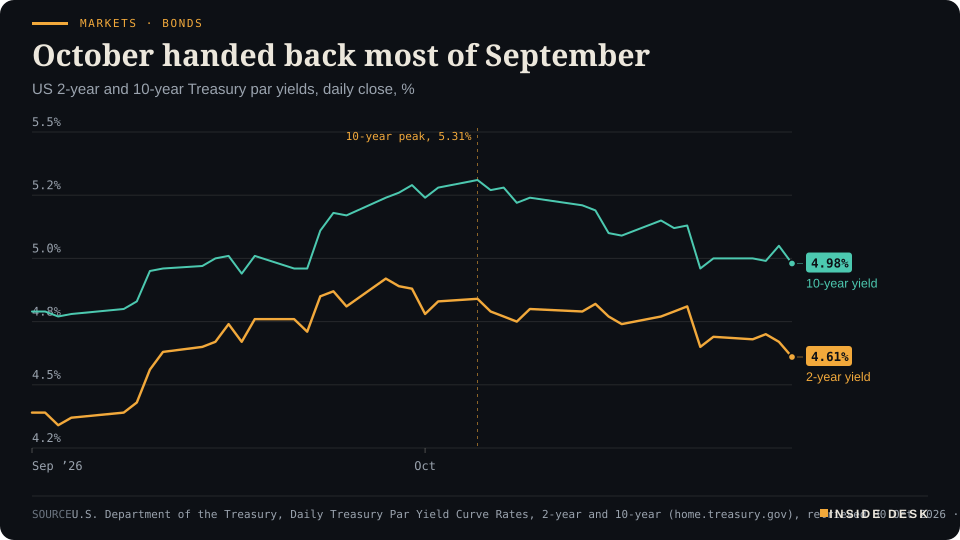
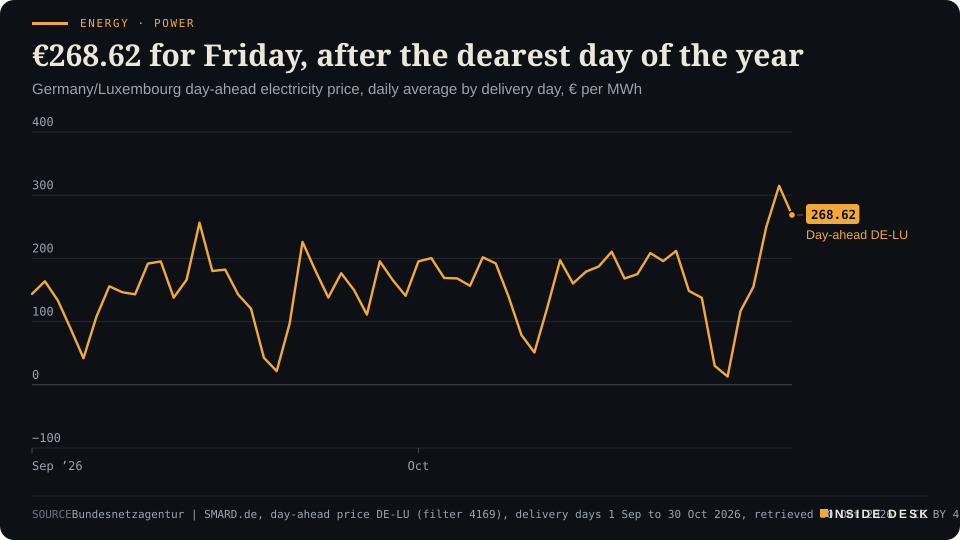
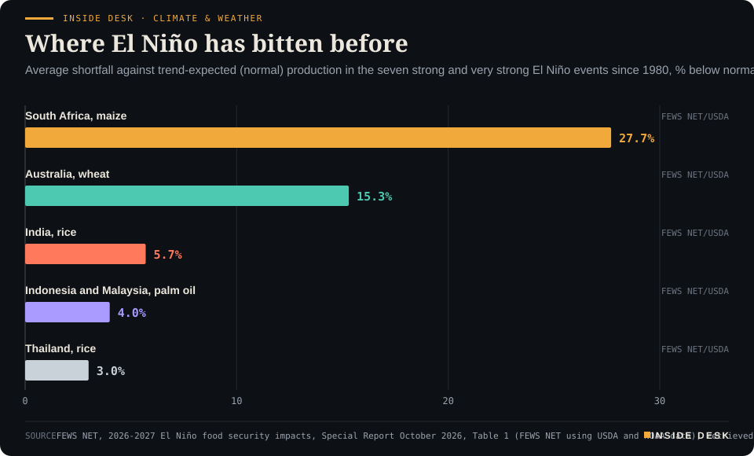

Inside Desk ePaper, Morning ePaper · Fri 30 Oct 2026
Friday, 30 October 2026Always free
Inside Desk
Morning ePaperAvailable 06:30 CET · Berlin
Lead · Markets & Macro
A week of cash-burning tech results ended with Asia's chipmakers falling and Treasuries heading for their best month since December 2023. The money did not vanish. It moved.
Asia's chipmakers fell and Treasuries headed for their best month since December 2023. The BoJ held at 1.25% and called its target in reach, Germany's wind dropped by seven-eighths before the year's dearest power day, and Hormuz traffic is still 70% below normal. Eleven desks, every number sourced.
Markets · BondsOctober handed back most of SeptemberUS 2-year and 10-year Treasury par yields, daily close, %

Line chart of the daily US 2-year and 10-year Treasury par yields since 1 September 2026. On 1 September the 2-year is at 4.39% and the 10-year at 4.79%. The 10-year peaks at 5.31% on 5 October; on 30 September the two stand at 4.88% and 5.29%. On Thursday 29 October 2026, the latest value, the 2-year is at 4.61% and the 10-year at 4.98%, 27 and 31 basis points below their end-September levels.
Source: U.S. Department of the Treasury, Daily Treasury Par Yield Curve Rates, 2-year and 10-year (home.treasury.gov), retrieved 30 Oct 2026 · U.S. government data, public domain · CSV
Geo-economics · p. 5
Energy & Industry · p. 10
Climate & Weather · p. 17
The day in one sentenceShares in the companies spending most on AI fell, the money moved into government bonds, and Japan's central bank said its two per cent target is finally in sight: a loud week ended with the quiet instruments doing the work.
ContentsInside Desk · Morning ePaper30 October 2026
Asia's chipmakers fell and Treasuries headed for their best month since December 2023. The BoJ held at 1.25% and called its target in reach, Germany's wind dropped by seven-eighths before the year's dearest power day, and Hormuz traffic is still 70% below normal. Eleven desks, every number sourced.
11 edition pieces · 11 desks · Available 06:30 CET, 30 October 2026
22 ePaper extras, added , 30 October. They appear only in the ePaper and carry their own time.
17:30 Evening ePaper, updated live until 22:30 with an “Updated” time and a Latest page
Sun 10:00 The Sunday Magazine
Berlin time. Every issue is free.
How to read it
Swipe, use the arrow keys or the page strip. Tap any headline for the reading view. Press / to search, t for contents, +/− to zoom. Download the PDF.
LeadInside Desk · Morning ePaper30 October 2026
Markets & Macro · Lead · 4 min
A week of cash-burning tech results ended with Asia's chipmakers falling and Treasuries heading for their best month since December 2023. The money did not vanish. It moved.
Friday morning in Asia looked like a rout if you read only the share prices. South Korea’s KOSPI slumped 5%, which takes its October fall past 17%, Reuters reports, and Japan’s Nikkei fell 3%1. China’s blue-chip CSI300 was heading for its largest monthly fall in a decade1. Nasdaq 100 futures were down 1.4%1. Read the other half of the screen, though, and the story changes. Bonds were surging towards their biggest monthly gain in nearly three years1.
That is the useful finding of the week. The money that left the AI trade did not disappear into panic. It went somewhere orderly.
What the shares were punishing. Not weak sales. Alphabet fell 12.6% on Wall Street and slipped further after hours, wiping out about $500 billion in market value, after heavy AI spending turned its cash flow negative1. After the US close, Intel dropped 23% in extended trading and Amazon about 7%, both for the same reason: cash going out faster than it comes in1. Intel’s own quarter was not a disaster. Revenue rose 21% to $16.51 billion, in line with estimates, and adjusted profit of 52 cents a share beat the 40 cents expected3. But it forecast fourth-quarter revenue of $15–16 billion, below the $17.07 billion analysts expected, and said it does not expect positive cash flow this year3. “It’s increasingly questioning whether shareholders will earn an adequate return on the enormous capital being deployed,” Pepperstone’s Chris Weston said of the market1.
That is a sober question, not a hysterical one. In Tokyo the selling was sharp but narrow: chip-equipment makers Advantest and Tokyo Electron fell 9.1% and 5.6%, Ibiden 15.2% and Lasertec 13.8%2. The broader Topix lost a milder 1.3%, and across the Nikkei’s 225 members 123 fell while 100 rose2. Konami jumped 15.3% on its results2. Over the week, the Nikkei was still up 0.2% at that point2. Desk arithmetic: almost half the index rose on a day the headline fell 3%. That is a market sorting balance sheets, not throwing everything out.
Where the money went. The cleanest receipt is the US Treasury’s own daily table. At Thursday’s close the 10-year par yield stood at 4.98% and the two-year at 4.61%4. On 30 September they were 5.29% and 4.88%4. In Tokyo trade on Friday, Reuters reports, the 10-year fell more than 7 basis points further to 4.91%, a fall of some 37 basis points through October and the largest one-month drop since December 20231. The two-year fell more than 8 basis points to 4.57%, and Fed funds futures rallied as traders dialled back some expectations of US rate rises1.
LeadInside Desk · Morning ePaper30 October 2026
Markets · BondsOctober handed back most of SeptemberUS 2-year and 10-year Treasury par yields, daily close, %
Line chart of the daily US 2-year and 10-year Treasury par yields since 1 September 2026. On 1 September the 2-year is at 4.39% and the 10-year at 4.79%. The 10-year peaks at 5.31% on 5 October; on 30 September the two stand at 4.88% and 5.29%. On Thursday 29 October 2026, the latest value, the 2-year is at 4.61% and the 10-year at 4.98%, 27 and 31 basis points below their end-September levels.
Source: U.S. Department of the Treasury, Daily Treasury Par Yield Curve Rates, 2-year and 10-year (home.treasury.gov), retrieved 30 Oct 2026 · U.S. government data, public domain · CSV
Desk arithmetic, on the Treasury’s official closes: from 30 September to 29 October the 10-year fell 31 basis points and the two-year 274. The 10-year’s peak this autumn was 5.31% on 5 October4. It has now handed back most of what it gained in September.
Some of this is the Federal Reserve’s doing, not the chipmakers’. Wednesday’s hold, with no firm signal of when the next rise might come, spurred the move into bonds further, Reuters notes1. Haven currencies firmed too: the yen was up about 0.2% at 157.47 per dollar, and the Swiss franc was near a one-month high at 0.82131. Oil helped in its own way. Falling crude on optimism over Middle East peace talks supported Japanese shares, Reuters reports2.
Why this is the calm version. Falling yields mean cheaper borrowing for governments, firms and, with a lag, mortgage holders. A bond rally that comes from investors demanding proof of returns, rather than from a broken bank or a frozen market, is the financial system doing its unglamorous job: re-pricing risk and sending capital where the receipts look sturdier. Nobody had to be rescued for that to happen. Earnings season is supposed to be when slides meet ledgers. This week the ledgers won, and markets noticed.
What comes next is scheduled, not guessed. The Bank of Japan held at 1.25% by 8–1 this morning, said underlying inflation is now broadly consistent with its 2% target, and Governor Ueda speaks at 07:30 CET5. Principal Asset Management’s Howe Chung Wan told Reuters the key is how the BoJ describes “the recent global bond market volatility”1. Europe then gets its own receipts: euro-area growth at 11:00 CET and German inflation at 14:00 CET6. For you, the point is simple. The loudest number of the week was a share-price fall. The most useful one may be a yield that went down. Nothing here is investment advice.
Geo-economicsInside Desk · Morning ePaper30 October 2026
Geo-economics · Podium vs Print · 2 min
The commander of US Central Command says the Strait of Hormuz's main lanes are clear of mines. The British maritime agency's weekly ledger shows how many ships are actually using them.
Podium
“Today, primary transit routes in the Strait of Hormuz remain free and clear of Iranian sea mines thanks to incredible efforts by our people.”
Adm. Brad Cooper, commander of US Central Command, during a visit to the Strait of Hormuz, Sunday 25 October 2026 (CENTCOM release)
Print114 out · 127 in
Combined Strait of Hormuz transits in seven days, "approximately 70% below pre-conflict levels".
UKMTO, Voluntary Reporting Area weekly overview, report no. 12, Week ending 23 October 2026, produced 23 Oct 2026
The podium. On Sunday, flying over the strait in an army helicopter, Adm. Brad Cooper, the commander of US Central Command, gave the American version in one sentence: “Today, primary transit routes in the Strait of Hormuz remain free and clear of Iranian sea mines thanks to incredible efforts by our people”1. The same release says more than 3,000 commercial vessels have crossed with US support over six months, that US forces have helped Gulf partners export more than 1.5 billion barrels of crude since the summer, and that “over 95% of ships” have sailed through safely in recent months1. On Thursday Iran’s Revolutionary Guards answered that the “unauthorised” southern route is mined, and said three tankers hit mines there; Iran’s army reported a fourth east of the strait3. None of the ships has been named3.
The print. UKMTO, the British maritime agency that takes incident reports from merchant ships, keeps a weekly ledger. For the week ending 23 October it counted 114 outbound and 127 inbound transits, against 125 and 129 the week before, “approximately 70% below pre-conflict levels”2. Only 47 of those crossings were visible on ships’ own tracking signals; the rest were US-stated escorted transits, about four for every one seen on AIS, which UKMTO says it “cannot independently verify”2. It has logged 86 incidents in the strait since 28 February, and since 6 July, 57 of 79 projectile strikes were on the southern route2.
The gap. Both statements can be true at once, and that is the point. Cooper speaks about mines in the main lanes. The ledger measures something else: how many owners are willing to send a ship. Desk arithmetic: 241 transits in the latest week, against 254 the week before and 275 the week before that2,5, a fall of about 12% in a fortnight. Overnight, UKMTO said a tanker 25 nautical miles north-east of Khasab had been hit on Thursday by two explosive devices attached to its hull from a small boat; the crew were safe, the fire was out and the ship carried on4. …
Geo-economics · Short item · ePaper extra, added
Yemen's Houthis say they hit Saudi Arabia's biggest refinery and two other oil sites. The kingdom's coalition reports an interception. Oil rose overnight on the claim, not on a confirmed outage.
On Thursday the Houthis said they had attacked several sites in Saudi Arabia, including Ras Tanura, the kingdom’s largest oil refinery, the Rabigh refinery and an Aramco facility at Abqaiq1. The Saudi-led coalition said it had intercepted a cruise missile fired towards the kingdom’s western region, and earlier on Thursday said it had destroyed a ballistic missile aimed at the eastern region1,2. Saudi Arabia has not confirmed any damage at the named sites in the reports.
The market did what markets do with claims: it priced the risk. Brent had settled 44 cents lower on Thursday at $114.88 a barrel, after falling by more than $2 earlier in the session on hopes for US–Iran talks; later reports of the attacks helped it recover some of the loss, one trader told Reuters2. …
Geo-economicsInside Desk · Morning ePaper30 October 2026
Geo-economics · Brief · ePaper extra, added
A proclamation signed on Wednesday closes a Section 232 inquiry that began in September 2025. It finds that the US relies on imports for most robots, industrial machines and their parts, and that this threatens national security1,2. No new duty follows for now. The commerce secretary and the trade representative are to negotiate with trading partners and report back within 180 days. Tariffs, quotas, fees, or a programme to encourage investment in US production stay on the table after that2. Supply Chain Dive counts this as the third time in three months the White House has chosen talks over immediate tariffs after such an inquiry, following wind turbines earlier this month and aircraft in July1.
For machine exporters, Germany’s among them, nothing changes at the US border today. Existing tariffs on the steel, aluminium and copper inside a machine still apply2. The finding stays on the books, though, so the next 180 days matter.
Markets & MacroInside Desk · Morning ePaper30 October 2026
Markets & Macro · Short item · ePaper extra, added
The biggest suspected crypto theft yet was also a test of whether anyone can stop the money moving. Part of the answer was yes.
Binance, the world’s biggest cryptocurrency exchange, said on Thursday that a “security incident” had affected about $6.3 billion of assets1. If confirmed as a theft, it would eclipse the $1.5 billion taken from Bybit in 2025, the previous record1. Early checks suggest an engineer’s compromised laptop let an attacker make unauthorised withdrawals, the exchange said1.
The part that worked. About half of the affected assets have been frozen with the help of other platforms, Binance said, and it pledged to “cover all losses”1. Tether said it had frozen around $1.6 billion and Circle more than $800 million, together about $2.4 billion1. Desk arithmetic: those two issuers alone account for roughly 38% of the $6.3 billion. Freezing is possible because the dollar tokens have central issuers who can act. That is a quiet argument for accountable institutions inside a market that was built to avoid them.
The part that hurt. Withdrawals are disabled until the environment is confirmed secure, co-chief executive Yi He said1. Bitcoin dropped more than 4% after the alerts, and Ethereum and Solana fell sharply1. Reuters says the hack also frayed nerves in wider markets, weighing on rival exchange Coinbase2, which itself says it was unaffected1.
What to watch. Binance says it will publish a full report when its investigation ends and is working with law enforcement1. If you hold crypto anywhere, the practical advice in Binance’s own alert applies broadly: rely only on official channels for updates1. Nothing here is investment advice.
Markets & Macro · Brief · ePaper extra, added
Intel shares fell 23% in extended trading on Thursday after the company forecast December-quarter revenue of $15–16 billion, below the $17.07 billion analysts expected, and said it does not expect positive cash flow this year1. It expects the deadly October explosion at its Kiryat Gat plant in Israel to erase roughly $600 million of revenue over two quarters; the plant is due to ramp up again by the end of this week after a two-week shutdown1.
The quieter line came from finance chief David Zinsner: the cost of 18A, the process behind its “Panther Lake” chips, has fallen 40% since the first quarter, which he said should help margins over the longer term1. “No result is good enough, and bad results receive extra punishment,” Seaport’s Jay Goldberg said of the mood1. Moods pass. Unit costs compound. Nothing here is investment advice.
Politics & InstitutionsInside Desk · Morning ePaper30 October 2026
Politics & Institutions · 2 min
Israel's count is done and neither bloc has 61. The law has already written what happens if nobody finds them, step by step, and a repeat election is the last step, not the next one.
The final count left Benjamin Netanyahu’s bloc on 53 seats, Gadi Eisenkot’s opposition bloc on 48 and the Arab-led parties on a record combined 19; 61 are needed for a majority in the 120-seat Knesset2,3. Turnout was 77.7%, up 7.1% from 2022, according to Central Elections Committee figures reported by the Jerusalem Post3. Coalition talk will fill the airwaves. The more useful document is the timetable the law already sets out.
Round one. Once results are certified, the president has seven days to choose a candidate, by 11 November at the latest1. That person gets 28 days, extendable by up to 14, so 42 at most1. Officials at the President’s Residence stress that the mandate need not go to the leader of the largest party, and say Isaac Herzog may begin quiet contacts as early as Friday, before formal consultations1.
Round two. If the first candidate fails, the president can hand the task to another member of the Knesset, who gets 28 days with no extension, or tell the Speaker that he sees no viable government1. Round three. A majority of members can then ask him in writing, within 21 days, to give the mandate to a named lawmaker who has agreed in writing; that person gets 14 days1. Only if that also fails is the Knesset treated as having dissolved itself, with an election within 90 days1.
The pace is not unusual. Previous government formations have taken between 20 and 100 days, according to the Israel Democracy Institute, as cited by CNBC2. Meanwhile the parties are doing the unglamorous part: Yair Golan of the Democrats met Ra’am’s Mansour Abbas on Thursday to discuss a possible partnership3, and the new Knesset is due to be sworn in on 10 November2.
For you, the reassuring point is the dull one. A long stalemate could leave Netanyahu in office as caretaker, CNBC notes2, but nobody gets to improvise the rules. Every stage has a date, a responsible office and a fallback. Herzog’s own line is the right test for everyone who walks in: come “with an open mind”1.
Politics & Institutions · Short item · ePaper extra, added
Early voting for Tuesday's midterms has passed 43 million. Registration data shows more Democrats in the queue. It still shows nothing about votes.
More than 43 million Americans have already voted in the midterm elections on Tuesday 3 November, according to University of Florida Election Lab data reported by the BBC1. Michael McDonald, who runs the tracker, says four to five million early votes have been cast each day, a much higher rate than in most previous elections1. The lab’s dashboard was last updated at 21:45 Eastern Time on Thursday2.
Texas stands out. More than 5.8 million ballots have been cast there, already about 1.75 million more than its 2022 numbers, McDonald told the BBC1. Minneapolis said it had set an early-voting record for a non-presidential election1.
Allegations of a “stolen” election have a legal address in Israel: Section 86 of the Knesset Elections Law. Suspicions or unlawful funding do not cancel anything automatically, the Jerusalem Post explains1. A challenge goes to the Jerusalem District Court, sitting as an administrative court, within 14 days of the results being published, and is heard by three judges; a central requirement is that the irregularity could have affected the results1.
The Shin Bet said on Thursday that its own inquiry into suspected foreign funding is unfinished, focused and limited, and should not be used to discredit a community that voted lawfully1. An election appeal does not suspend the Knesset’s work1. That is how a claim becomes a case: with a filing, a deadline and evidence.
Psychology & BehaviourInside Desk · Morning ePaper30 October 2026
Psychology & Behaviour · 2 min
An Israeli survey of people who use AI tools finds that the worse someone feels, the likelier they are to bring it to the machine. It does not say whether that helps, and it says so.
Some questions are easier to type than to say. A study published this week in Cyberpsychology, Behavior, and Social Networking asked 584 Israeli adults, aged 18 to 70, who had used a general-purpose AI tool such as ChatGPT at least once in the past year, whether they had ever used it for emotional support, coping advice or help with their mental health1. In all, 29.3% said yes1. Among participants with severe psychological distress, the figure was 47%1.
The pattern is the finding. Of the things the researchers measured, distress was the one most strongly linked to turning to AI for support; younger people and women were also significantly more likely to do so1. The team, led by Dorit Hadar Shoval of Tel-Hai University with Elad Refoua of Bar-Ilan University, also looked at attachment style. People with more attachment anxiety, a persistent worry about being let down by those close to them, were more likely to seek support from AI, but once distress was taken into account that link was no longer significant1. The two travel together, and the study cannot say which comes first1.
“These tools offer immediate, accessible and nonjudgmental interactions, but they were not designed to function as mental health providers,” Hadar Shoval said1. Consumer chatbots, the authors note, carry no clinical mandate and have no established safeguards for psychological crises1.
Read the limits as carefully as the headline. Participants came from an online panel in November 2025, so the figures describe this sample, not Israel’s population1. “Use” means anything from a single exchange to a regular habit1. And the study does not judge whether the conversations helped or harmed, or whether anyone used AI instead of a therapist1. It is a map of who knocks on the door, not a review of what happens inside.
That is still useful. …
Psychology & Behaviour · Short item · ePaper extra, added
Two small experiments find that gory detail in a headline lifts horror far more than fear, because it makes the harm feel abnormal. In time for Halloween, a note on what words do.
Tomorrow is Halloween, when fear is a costume. A study published in Cognition and Emotion argues that real-world horror is a different emotion altogether1.
Pamela Marie Taylor of Akita International University ran two experiments, each with 60 native English speakers in the United States recruited online1. Participants read four short news headlines about a person being harmed. The headlines varied in two ways: moderate injury against extreme, permanent harm, and abstract wording (“a person was murdered”) against concrete, sensory detail1.
Alexithymia is the difficulty of identifying and describing your own emotions. A school survey of 7,964 secondary pupils in six Chinese provinces and regions, published in BMC Psychology, found that loneliness and poor sleep went with more of it, while resilience and perceived social support went with less1. Loneliness had the largest association1. Teenagers found negative emotions harder to name than positive ones1. The full model explained 23.9% of the variation in scores1. The design is a single snapshot taken in early 2024, so it cannot show cause; the authors call these “potentially modifiable correlates” worth testing over time1. A pattern, not a prescription, and a hopeful one: sleep and company are things a household can work on.
Energy & IndustryInside Desk · Morning ePaper30 October 2026
Energy & Industry · 2 min
SMARD's receipts for Thursday, the dearest power day of 2026, are in. They show who left the grid between Monday and Thursday, and who was paid to fill the gap.
On Thursday, German wholesale power cost more than on any other day this year: the day-ahead price for Germany and Luxembourg averaged €314.85 per megawatt hour2. A day later the receipts are in, and they read less like a mystery than like a roll call.
Energy · Power€268.62 for Friday, after the dearest day of the yearGermany/Luxembourg day-ahead electricity price, daily average by delivery day, € per MWh

Line chart of the daily average German-Luxembourg day-ahead electricity price from 1 September to 30 October 2026, in euros per megawatt hour. It reaches a September high of €256.55 on 14 September, falls to €30.12 on Saturday 24 October and €13.12 on Sunday 25 October during the storm, then climbs to €249.21 on 28 October and €314.85 on Thursday 29 October, the highest daily average of 2026 so far. The latest value is €268.62 for delivery on Friday 30 October.
Source: Bundesnetzagentur | SMARD.de, day-ahead price DE-LU (filter 4169), delivery days 1 Sep to 30 Oct 2026, retrieved 30 Oct 2026 · CC BY 4.0 · CSV
Who left. On Monday 26 October, onshore wind turbines generated 688.8 gigawatt hours, according to the Bundesnetzagentur’s SMARD figures; on Thursday they generated 97.3 GWh1. Offshore farms fell from 136.9 GWh to 11.6 GWh over the same days1. Desk arithmetic: wind as a whole dropped from about 826 GWh to about 109 GWh, a fall of roughly seven-eighths in three days.
Energy & Industry · Short item · ePaper extra, added
Attacks on Saudi refineries and three tankers lost to mines south of Hormuz pushed oil up again in early Asian trade. The month's arithmetic is now the story.
Oil opened Friday higher. Brent crude futures rose 86 cents, or 0.75%, to $115.74 a barrel at 02:22 CET, and US West Texas Intermediate rose 72 cents to $102.72, CNBC reported, carrying Reuters1.
The trigger. On Thursday, Yemen’s Houthis said they had attacked several sites in Saudi Arabia, including the Ras Tanura refinery, the kingdom’s largest, the Rabigh refinery and an Aramco facility at Abqaiq1. A Saudi-led coalition said it had intercepted a cruise missile aimed at the west of the country1. …
Energy & Industry · Brief · ePaper extra, added
The Dutch TTF front-month gas contract, Europe’s benchmark, reached €100 per megawatt hour on Wednesday for the first time since December 2022, Reuters reported, and a Dow Jones update put it at €100.24 that afternoon1. Reuters linked the rise to continuing disruption of LNG shipments from the Middle East1.
The November contract had its last trading day on Thursday, with trading ending at 18:00 CET, according to ICE’s rules1. From today the “front month” quoted in headlines is December, whose own last trading day is 27 November1. The practical point: a new contract means a new delivery period behind the same name, so compare like with like. ACER’s summer review put EU gas storage at 75% full on 21 October, below the nine-year average1. Nothing here is investment advice.
Money, FX & CommitteesInside Desk · Morning ePaper30 October 2026
Money, FX & Committees · 2 min
The Bank of Japan held at 1.25% but wrote down a sentence it has long waited to write. The more interesting news is in the footnotes.
The Bank of Japan kept its short-term policy rate at 1.25% on Friday, by an 8–1 vote2. Board member Hajime Takata dissented and proposed a rise to 1.5%2. That is the headline. The sentence that matters is in the quarterly Outlook Report: underlying inflation is now “generally consistent” with the 2% target and expected to stay there1.
Why the sentence matters. investingLive reads it as the bank all but declaring victory over deflation, with its own forecasts now saying inflation is the bigger risk1. Risks to prices are skewed to the upside, the bank says, while risks to activity are broadly balanced1. It points to a persistent sense of labour shortage, wages and prices feeding each other, and medium- to long-term inflation expectations of about 2%1. Those are not slogans. They are payroll and invoice facts.
What the forecasts say. The board’s median forecast for core inflation in fiscal 2027 rose to 2.6% from 2.4%, mostly because of higher crude prices since the summer; fiscal 2026 stays at 2.5% and fiscal 2028 at 2.0%1. Growth is seen at 0.7% in fiscal 2026 and 2027 and 0.8% in 20281. One assumption deserves a pencil mark: the projections assume Dubai crude falls from around $105 a barrel to around $70 by the end of the forecast period1. investingLive notes that a sustained rise in oil tied to the Iran conflict would add to the upside risk to inflation1.
The receipt on the same morning. Tokyo’s core consumer prices rose 2.6% in October from a year earlier, slightly slower than September’s 2.7% and in line with forecasts3. Underlying prices excluding fresh food and energy also rose 2.6%3. Desk arithmetic: the capital’s numbers and the bank’s declaration line up almost exactly.
The calm point. No member voted for a cut, which removes a risk flagged before the meeting1. A bank that moves slowly, explains its reasoning in a published report and lets one dissenter argue in public is the dull machinery working as designed. …
Money, FX & Committees · Short item · ePaper extra, added
Europe publishes its third quarter and its October prices today. Here is the timetable, and what forecasters expect, before anybody spins it.
Friday is the day the euro area’s statisticians hand in their homework, and the timetable is dense. All times CET, all forecasts as compiled by Dow Jones Newswires1.
Growth. France publishes its first estimate of third-quarter GDP at 07:30, with a forecast of 0.1% growth on the quarter after 0.0% in the second1. Spain follows at 09:00 (forecast 0.6%, after 0.7%)1. Germany and Italy report at 10:00. …
Money, FX & Committees · Brief · ePaper extra, added
Alongside Friday’s rate hold, the Bank of Japan’s board agreed unanimously to more than double the pace at which it sells its holdings of exchange-traded funds from January 20271. Sales rise to about 860 billion yen a year at book value, from about 330 billion yen1. That cuts the time needed to sell everything to about 43 years, from around 1121.
The funds are a legacy of years spent trying to lift prices by buying shares. investingLive reads the change as adding modest supply to Japanese equities from 2027, with the 43-year horizon keeping the annual effect small1. Desk arithmetic: 860 billion yen is about 2.6 times the old pace. The useful point is the manner of it. A central bank unwinding a crisis tool slowly, on a published schedule, gives everyone else time to plan. Nothing here is investment advice.
Ordinary & Inherited LifeInside Desk · Morning ePaper30 October 2026
Ordinary & Inherited Life · 2 min
Tokyo's October price list shows what an average hides: one staple at its steepest fall since 1971, a fast-food bill rising fast, and kerosene up 11.6%.
Tokyo’s consumer prices excluding fresh food rose 2.6% in October from a year earlier, the internal affairs ministry reported on Friday, a little slower than September’s 2.7%3. That single number is what central bankers watch. Your shopping basket is made of the numbers underneath it.
The staple that got cheaper. Rice fell 31.3% on the year, Sankei reports, because stocks are in surplus and new-crop rice is cheap1. Reuters says it is the largest fall since records began in January 19712. The staple shelf is now pulling the index down.
The meal that got dearer. Hamburgers bought out rose 16.4%, after price rises at big chains1. Food excluding fresh produce rose 3.0% overall1. Of the 529 items in the core index, 364 rose, 115 fell and 49 were unchanged, Reuters counts; the number rising fell from 373 in September2.
The bills that turned. Energy rose 2.2%1. Kerosene was up 11.6%, which Sankei links to the worsening situation in the Middle East1. Electricity rose 1.7% and city gas 4.9%, both turning higher on the year as government subsidies shrank and fuel costs passed through2. Petrol fell 2.3%1. Water charges were unchanged on the year, after a 65.6% rise in September, an effect of a one-month difference in when Tokyo’s free basic water charge ended last year and this2.
What households may be saying. UBS’s Tsuyoshi Kurihara called the reading “weak” and said food prices were not accelerating towards the 8–9% peaks his firm had expected2. He suggested watching whether households have grown tired of food price rises2. Desk arithmetic: a rice bill a third lower can pay for a lot of dearer burgers. The ledger does not say the squeeze is over. It says the squeeze has moved from the staple to the extras, and to the kerosene can. For you, the lesson travels: when a headline rate barely moves, read the lines.
Ordinary & Inherited Life · Short item · ePaper extra, added
Germany's municipalities, with their utilities and companies, owed €378.9 billion at the end of 2025. The bill behind the services your council runs is rising.
Germany’s towns, districts and the companies they own owed €378.9 billion at the end of 2025, Destatis reported on Thursday, 9.9% more than a year earlier1. That is €4,907 for every resident1. The rise a year before had been 6.3%1.
Where it comes from. This “integrated” count adds the debts of municipal core budgets to those of their off-budget units, funds and companies, so that a town that runs its own utility is compared fairly with one that does not1. Most of the growth came from the core and off-budget budgets, up 15.5% and 14.7%; both ran a record deficit in 2025 for the second year running1. Debts of municipal companies and funds rose 4.5%1.
Ordinary & Inherited Life · Brief · ePaper extra, added
The share of UK households that missed a bill, card, rent or mortgage payment in the month to 14 October was unchanged at 7.1%, Which?’s monthly tracker finds; it has crept up from 6.8% in July1. The number making a financial adjustment to cover essentials, such as cutting back, dipping into savings or borrowing, rose 1.7 points to 53%, a second monthly rise1.
Confidence in future household finances fell four points to −16, its second monthly drop, down from a July peak of −71. Current finances held better at +181. The survey polled 2,132 adults between 14 and 16 October1.
The ordinary reading: the payment line is holding, and it is holding because people are adjusting. That effort deserves to be counted, and here it is.
Tech & ComputeInside Desk · Morning ePaper30 October 2026
Tech & Compute · 2 min
The quarterly report puts a number on what the partnership pays: $10 billion of revenue, $7.2 billion still owed, and a building bill that doubled. The cash, unlike at some neighbours, still came out ahead.
The press release tells you what a company wants you to hear. The quarterly report tells you what the accountants require it to say. Microsoft’s 10-Q for the three months to September, filed on Wednesday evening, contains one sentence worth reading slowly: because OpenAI is a related party, Microsoft must disclose what it earns from it. The answer is $10.0 billion of revenue in the quarter, “inclusive of revenue-sharing payments”1.
Set that against the whole. Total revenue was $92.3 billion1. Desk arithmetic: OpenAI arrangements were about 10.8% of everything Microsoft sold, roughly one dollar in nine. For the whole of the previous financial year the figure was $24.1 billion, TechCrunch notes, so the latest quarter alone ran at well over a third of that2. The filing also shows what has not yet arrived: accounts receivable from OpenAI stood at $7.2 billion at the end of September, against $6.0 billion at the end of June1. That is money owed for work already done, not extra revenue2. Microsoft’s stake has slipped to about 24% on an as-converted basis1, from about 25% in June, according to TechCrunch2.
The second thing the filing shows is the building bill. Additions to property and equipment were $39.4 billion, against $19.4 billion a year earlier1. Desk arithmetic: just over twice as much. Leases that have been signed but have not yet started, mostly for data centres, add up to $364.6 billion, to begin between fiscal 2027 and 20341. That is a very large promise, written into a footnote.
Here the comparison with this week’s other filings is instructive. Operations brought in $58.0 billion of cash1. Desk arithmetic: after capital spending, $18.6 billion was left, down from about $25.7 billion a year earlier but still positive. Microsoft is building hard, but this quarter it collected fast enough to pay for it; Alphabet, by its own filing, did not, with free cash flow of minus $9.1 billion4. …
Tech & Compute · Short item · ePaper extra, added
SK hynix crossed 100 trillion won of quarterly revenue for the first time and says the shortage of memory chips will last until 2030. The interesting number is not the profit but the contracts.
Every AI server needs memory, and this week South Korea’s SK hynix showed what that is worth. SK hynix reported third-quarter revenue of 104.6 trillion won and operating profit of 83.3 trillion won, an operating margin of 80%1. A year earlier revenue was 24.4 trillion won1. Desk arithmetic: the company kept about 80 won of operating profit from every 100 won it sold, against about 47 a year ago.
The more durable figure is in the order book. SK hynix says it has signed long-term agreements with 14 major customers, including the large cloud companies, covering more than 50% of its total production capacity for 2027 and 20281. The contracts carry a price range agreed with customers, with a mechanism that follows market conditions inside it1. That is the dull machinery that turns a boom into something a supplier can plan a factory around.
Why the confidence? The company says leading-edge processes are technically hard and new plants take a long time to build, so it expects demand to exceed supply “through 2030”1. That is the company’s own outlook, not ours, and outlooks are not contracts.
What it does with the money is plainer. Net cash rose to 98.7 trillion won, and the company plans about 100 trillion won of shareholder returns for 2026, including a special dividend from gains on its Kioxia stake1. It also dropped plans to list its Solidigm unit, citing market conditions1.
For you, the sum is simple: the memory in your next laptop or phone comes from factories whose output, by the maker’s own account, is half spoken for by data-centre customers for two years. Nothing here is investment advice.
Tech & ComputeInside Desk · Morning ePaper30 October 2026
Tech & Compute · Brief · ePaper extra, added
The European Commission on Wednesday approved €319 million of Austrian state aid for Infineon to help fund a €1.1 billion upgrade of its factory in Villach1. Desk arithmetic: the public share is about 29% of the investment. The aim is high-volume production of gallium nitride power semiconductors on 300-millimetre wafers, which Infineon says would be a world first1. Bigger wafers yield 2.3 times as many chips as the usual 200-millimetre ones, lowering cost per chip1. These chips sit in phone chargers, electric cars, solar inverters and data centres, where wasting less power matters1. The work is due to be completed in 20341. Infineon already holds a 29% share of the power-semiconductor market1: not a headline chip, but one Europe already makes well.
Health & CareInside Desk · Morning ePaper30 October 2026
Health & Care · 2 min
America's vaccine advisory committee cannot vote until it has members again. Nominations are open until 31 December, and the insurance calendar behind that date is the part worth reading.
In August the US Food and Drug Administration approved Moderna’s mRNA flu vaccine for adults aged 50 and over1. In October some of those adults are still paying for it themselves. The reason is not the science. It is an empty committee room.
The gap. A court order halted Health Secretary Robert F. Kennedy Jr.’s overhaul of the CDC’s Advisory Committee on Immunization Practices, ACIP, but no new members have been appointed, so the committee cannot issue recommendations, CIDRAP’s biweekly vaccine-policy review reports1. Without an ACIP recommendation, insurers are not required to cover a new vaccine1. In states that allow pharmacists to give only ACIP-recommended vaccines, it may not be available at the pharmacy at all1.
The calendar. The CDC is now taking nominations for ACIP until 31 December, so a reconstituted committee is unlikely to vote before next year1. The committee can have up to 19 members, and anyone can apply or be nominated; the health secretary makes the final picks1. Then comes the slow part. Insurers do not have to cover a newly recommended vaccine until the plan year that starts a full year after the recommendation, so a recommendation made after this December would push required coverage to January 2029 at the earliest for most plans1.
The stopgap. AHIP, the insurers’ trade group, has pledged that its members will keep covering all vaccines recommended as of September 2025, and the federal government has appealed the ruling1. That protects the existing schedule, but not vaccines approved since.
Health & Care · Short item · ePaper extra, added
WHO's vaccine advisers have published their October conclusions. The striking part is how much of it is about using what countries already have more carefully.
WHO’s Strategic Advisory Group of Experts on Immunization, SAGE, met from 5 to 8 October, and on Thursday Kate O’Brien, WHO’s immunisation director, set out what it concluded1. Read closely, it is a budget document as much as a medical one: “financial pressures are making it harder for country immunization programmes to close these gaps,” she writes1.
Health & Care · Brief · ePaper extra, added
The monoclonal antibody that protects newborns against respiratory syncytial virus, RSV, costs about $500 a dose, and most US commercial insurers will not reimburse hospitals for giving it, CIDRAP reports1. Hospitals usually negotiate bundled payments for delivery and newborn care; insurers argue that not every infant needs the antibody, because some mothers were vaccinated in pregnancy and some babies are born outside RSV season1.
Families can get the shot free at a paediatrician’s office, but some infants are not seen within the recommended first seven days, said Dr Michelle Fiscus of the Association of Immunization Managers1. Only about 40% of eligible pregnant people received the maternal RSV vaccine, according to the American Academy of Pediatrics1. The practical advice in the report is simple: if you are expecting this season, ask your hospital in advance whether it gives the antibody before discharge1.
Security & OrderInside Desk · Morning ePaper30 October 2026
Security & Order · 2 min
Ukraine has reportedly put its drone campaign against Russian refineries on hold under US pressure. Kyiv has not said so. The clearest public evidence is in the barrels.
Ukrainian units that carry out long-range strikes were told in mid-October that the campaign against Russian oil refineries was effectively on hold once missions already under way were finished, the Wall Street Journal reported on Thursday1. Reuters, which carried the report, said it could not immediately verify it1. The unofficial pause is expected to last until after the US midterm elections and possibly deeper into November1. Kyiv has not announced anything; until now it had refused to stop, calling the drone campaign its only viable answer to years of bombardment1.
The background is a quarrel over diesel. Reuters reports that Donald Trump grew increasingly frustrated with the strikes as diesel prices hit record highs, and answered by announcing a deal to buy diesel from Moscow and a waiver of sanctions he had signed into law in September1.
The part you can check sits in the oil trade’s own notes. JPMorgan analysts wrote late on Wednesday that there had been no further confirmed attacks on Russian refining since the 15 October strike on the Ryazan refinery, and that “the silence has allowed Russian refinery runs to rebound by 350,000 barrels a day last week, to 4 million barrels a day”2. That is consistent with the reported pause. It does not prove an order was given.
What did not pause is the other direction. Russian drone and missile attacks killed at least 20 people in Ukraine on Thursday, including 14 on a platform at Dnipro’s main station, five in Chernihiv and Kremenchuk and one in a late-evening missile strike on Kyiv, Ukrainian officials said1. About 350,000 households lost electricity1. Ukraine’s prime minister said Russia was “deliberately hunting civilians”1.
For you, the honest reading is narrow. One side’s restraint is reported, not declared; the other side’s strikes are counted daily by mayors and railway staff. The ledger to watch is the one that cannot be talked up: refinery runs, power cuts, and whether next month’s talks actually convene.
Security & Order · Short item · ePaper extra, added
The UN's nuclear agency says a worker at the Zaporizhzhia nuclear plant was killed in a drone attack. It did not say whose drone.
An employee of the Zaporizhzhia Nuclear Power Plant has been killed in a drone attack, the International Atomic Energy Agency said early on Friday1. The agency said it had been informed of the death and identified the victim as a reported welder at the plant’s centralised repair workshop1. It did not say who launched the drone.
Rafael Grossi, the IAEA’s director general, said: “Any attack on nuclear plant staff is completely unacceptable and violates the Seven Indispensable Pillars for Nuclear Safety and Security during an armed conflict”1. The agency repeated his appeal for “maximum military restraint” to prevent a nuclear accident1.
The pillars are not poetry. …
Security & Order · Brief · ePaper extra, added
Moscow and Kyiv both said on Thursday that de-mining had been completed for the humanitarian mission to Oleshky, the Russian-occupied town in the southern Kherson region, and that preparations were under way, Reuters reports1. The six-day local truce, brokered by the United States, is meant to let aid reach the town and to let residents leave if they wish1.
It is a small arrangement with a narrow map. On the same day, Russian strikes killed at least 20 people elsewhere in Ukraine, Ukrainian officials said1. But a cleared road is a fact on the ground, checked by sappers from both sides. Next comes the dull test: whether the convoy arrives, unloads and leaves on schedule.
Climate & WeatherInside Desk · Morning ePaper30 October 2026
Climate & Weather · 2 min
A new estimate says El Niño could cut Brazil's soybean harvest by almost 10%. The more useful lesson, from the famine early-warning people, is about timing: the worst comes after the rain, which leaves time to act.
A larger field is not a larger harvest. That is the plain point of a study by the credit bureau Serasa Experian, reported by Valor International on Thursday: unstable El Niño rainfall, especially in Brazil’s Central-West, could cut the country’s 2026/27 soybean output by 9.7%, to 163.6 million tonnes1. “A larger planted area does not necessarily mean a better crop,” said Daniel de Oliveira of Serasa, even though planting is up 1.8%, to 49.9 million hectares1.
Where it would land. Mato Grosso and Goiás would account for 80% of the potential losses, while Rio Grande do Sul in the south is the state most likely to see its harvest grow1. About 40% of the soybean area has been planted1. Serasa puts the lost gross production value at about R$33 billion, and stresses that this is an indication, not a forecast of actual losses, because prices would move too1. Valor reports that NOAA now sees a 100% chance of El Niño reaching “very strong” by the year-end1.
The longer view. FEWS NET, the Famine Early Warning Systems Network, has published the first of three El Niño special reports, and its tables are sobering and steadying at once2. In the seven strong and very strong El Niño events since 1980, South Africa’s maize crop averaged 27.7% below its normal trend and Australia’s wheat 15.3% below, while world output of wheat, maize and rice together came in 1.3% above normal2.
Climate & Weather · Short item · ePaper extra, added
This week's US Drought Monitor shows the West getting relief and the Mid-South getting drier. The driest stretch sits on the river that moves America's grain.
America’s weather this autumn has split along a line. The latest US Drought Monitor, published on Thursday for the week to 27 October, shows drought spreading from the southern Mississippi Valley into the southern Midwest, while heavy rain improved conditions across the High Plains and the West, Feed & Grain reports1.
The dry side. Extreme to exceptional drought, the two most severe categories, now covers much of central and western Tennessee, Arkansas, Louisiana and parts of Mississippi1. Most of Arkansas, Louisiana, Mississippi and south-western Tennessee have had 8 to 16 inches less rain than normal over four months, generally less than half the usual amount1. Extreme to exceptional drought also covers a large swathe of central and southern Missouri1.
Climate & Weather · Brief · ePaper extra, added
Typhoon In-fa has been downgraded from super typhoon but remains Category 4, the National Weather Service in Guam said in its Advisory 27, issued at 04:21 CET1. Maximum sustained winds have eased to 145 mph, and the storm was moving west-northwest at 22 mph, about 95 miles east-south-east of Agrihan and 355 miles north-north-east of Guam1. The forecast track takes its centre over or just north of Agrihan “in a few hours”1.
A typhoon warning remains in force for Alamagan, Pagan and Agrihan in the Northern Mariana Islands1. Typhoon-force winds extend up to 80 miles from the centre1. The weather service expects In-fa to turn slightly north-west, slow down through Saturday and keep weakening gradually over the next few days1. Its next scheduled advisory is due at 11:00 CET1.
Charts and dataInside Desk · Morning ePaper30 October 2026
Charts and data
Markets · BondsOctober handed back most of SeptemberUS 2-year and 10-year Treasury par yields, daily close, %
Line chart of the daily US 2-year and 10-year Treasury par yields since 1 September 2026. On 1 September the 2-year is at 4.39% and the 10-year at 4.79%. The 10-year peaks at 5.31% on 5 October; on 30 September the two stand at 4.88% and 5.29%. On Thursday 29 October 2026, the latest value, the 2-year is at 4.61% and the 10-year at 4.98%, 27 and 31 basis points below their end-September levels.
Source: U.S. Department of the Treasury, Daily Treasury Par Yield Curve Rates, 2-year and 10-year (home.treasury.gov), retrieved 30 Oct 2026 · U.S. government data, public domain · CSV
Energy · Power€268.62 for Friday, after the dearest day of the yearGermany/Luxembourg day-ahead electricity price, daily average by delivery day, € per MWh
Line chart of the daily average German-Luxembourg day-ahead electricity price from 1 September to 30 October 2026, in euros per megawatt hour. It reaches a September high of €256.55 on 14 September, falls to €30.12 on Saturday 24 October and €13.12 on Sunday 25 October during the storm, then climbs to €249.21 on 28 October and €314.85 on Thursday 29 October, the highest daily average of 2026 so far. The latest value is €268.62 for delivery on Friday 30 October.
Source: Bundesnetzagentur | SMARD.de, day-ahead price DE-LU (filter 4169), delivery days 1 Sep to 30 Oct 2026, retrieved 30 Oct 2026 · CC BY 4.0 · CSV
Latest values
Series
Value
Date
Chart
2-year yield
4.61%
29 Oct 2026
October handed back most of September
10-year yield
4.98%
29 Oct 2026
October handed back most of September
Day-ahead DE-LU
268.62
30 Oct 2026
€268.62 for Friday, after the dearest day of the year
Last data point of each series in the charts above, from the Inside Desk data archive. Sources under each chart.
Back pageInside Desk · Morning ePaper30 October 2026
Before you close the tab
The day in one sentence
Shares in the companies spending most on AI fell, the money moved into government bonds, and Japan's central bank said its two per cent target is finally in sight: a loud week ended with the quiet instruments doing the work.
One thing you can do this week
On Sunday, the first of November, write down your meter readings: gas, electricity, or the level in the oil tank. Heating oil cost about €1.72 a litre on the German average on Thursday, HeizOel24 reports 2, but that is a price, not your bill. A reading on the first of every month turns the national number into your own, and makes the next statement something you can check rather than merely pay.
A habit, not advice.
What went right
Some 252 million hectares in 149 countries are now under restoration, an area about the size of Kazakhstan, a UN report published on Thursday finds, creating more than one million green jobs: the largest documented restoration effort to date 1. Restoration on land has reached nearly half of the global goal of putting 30% of degraded land ecosystems under restoration by 2030 1. The share of countries reporting wetland restoration programmes has risen from 8% to 54% since 2022, and the flagship projects count mountain gorillas, jaguars, snow leopards and Ganges river dolphins among their recoveries 1. Rivers and coasts still lag, and the money must more than quadruple, the report says 1; but the ledger is being kept, and it is growing.
In euros at home
Heating oil cost €171.77 per 100 litres on the German average on Thursday at 12:20, for an order of 3,000 litres, against €171.79 the day before, HeizOel24 reports 2. Per litre that is about €1.72, barely changed on the day; among large cities Munich was cheapest at €1.67 and Frankfurt dearest at €1.76 2. Desk arithmetic: a 3,000-litre delivery at the national average comes to about €5,153; the nine-cent gap between Munich and Frankfurt is worth about €270 on the same order.
Desk arithmetic on the cited averages. Prices differ by dealer, region, order size and day. Nothing here is advice.
Small words
Flash estimate
A first, quick reading of how much an economy grew, published before all the data are in. Eurostat releases its preliminary flash estimate for euro-area growth in the third quarter today at 11:00 CET, with further GDP releases scheduled for 13 November and 7 December 3. Each one uses more information than the last, so the number can move. A flash is a photograph taken early, not the final portrait; it is useful precisely because it comes on time.
Commentary for information only. Not investment, legal, tax, medical or political advice. Inside Desk is free and reader-supported. Every number is sourced in the piece it appears in.
This issue has been updated.
All articles in this edition
Markets & Macro · 4 min read
The shares took the blame; the bonds got the money
A week of cash-burning tech results ended with Asia's chipmakers falling and Treasuries heading for their best month since December 2023. The money did not vanish. It moved.
Friday morning in Asia looked like a rout if you read only the share prices. South Korea’s KOSPI slumped 5%, which takes its October fall past 17%, Reuters reports, and Japan’s Nikkei fell 3%1. China’s blue-chip CSI300 was heading for its largest monthly fall in a decade1. Nasdaq 100 futures were down 1.4%1. Read the other half of the screen, though, and the story changes. Bonds were surging towards their biggest monthly gain in nearly three years1.
That is the useful finding of the week. The money that left the AI trade did not disappear into panic. It went somewhere orderly.
What the shares were punishing. Not weak sales. Alphabet fell 12.6% on Wall Street and slipped further after hours, wiping out about $500 billion in market value, after heavy AI spending turned its cash flow negative1. After the US close, Intel dropped 23% in extended trading and Amazon about 7%, both for the same reason: cash going out faster than it comes in1. Intel’s own quarter was not a disaster. Revenue rose 21% to $16.51 billion, in line with estimates, and adjusted profit of 52 cents a share beat the 40 cents expected3. But it forecast fourth-quarter revenue of $15–16 billion, below the $17.07 billion analysts expected, and said it does not expect positive cash flow this year3. “It’s increasingly questioning whether shareholders will earn an adequate return on the enormous capital being deployed,” Pepperstone’s Chris Weston said of the market1.
That is a sober question, not a hysterical one. In Tokyo the selling was sharp but narrow: chip-equipment makers Advantest and Tokyo Electron fell 9.1% and 5.6%, Ibiden 15.2% and Lasertec 13.8%2. The broader Topix lost a milder 1.3%, and across the Nikkei’s 225 members 123 fell while 100 rose2. Konami jumped 15.3% on its results2. Over the week, the Nikkei was still up 0.2% at that point2. Desk arithmetic: almost half the index rose on a day the headline fell 3%. That is a market sorting balance sheets, not throwing everything out.
Where the money went. The cleanest receipt is the US Treasury’s own daily table. At Thursday’s close the 10-year par yield stood at 4.98% and the two-year at 4.61%4. On 30 September they were 5.29% and 4.88%4. In Tokyo trade on Friday, Reuters reports, the 10-year fell more than 7 basis points further to 4.91%, a fall of some 37 basis points through October and the largest one-month drop since December 20231. The two-year fell more than 8 basis points to 4.57%, and Fed funds futures rallied as traders dialled back some expectations of US rate rises1.
Markets · BondsOctober handed back most of SeptemberUS 2-year and 10-year Treasury par yields, daily close, %
Line chart of the daily US 2-year and 10-year Treasury par yields since 1 September 2026. On 1 September the 2-year is at 4.39% and the 10-year at 4.79%. The 10-year peaks at 5.31% on 5 October; on 30 September the two stand at 4.88% and 5.29%. On Thursday 29 October 2026, the latest value, the 2-year is at 4.61% and the 10-year at 4.98%, 27 and 31 basis points below their end-September levels.
Source: U.S. Department of the Treasury, Daily Treasury Par Yield Curve Rates, 2-year and 10-year (home.treasury.gov), retrieved 30 Oct 2026 · U.S. government data, public domain · CSV
Desk arithmetic, on the Treasury’s official closes: from 30 September to 29 October the 10-year fell 31 basis points and the two-year 274. The 10-year’s peak this autumn was 5.31% on 5 October4. It has now handed back most of what it gained in September.
Some of this is the Federal Reserve’s doing, not the chipmakers’. Wednesday’s hold, with no firm signal of when the next rise might come, spurred the move into bonds further, Reuters notes1. Haven currencies firmed too: the yen was up about 0.2% at 157.47 per dollar, and the Swiss franc was near a one-month high at 0.82131. Oil helped in its own way. Falling crude on optimism over Middle East peace talks supported Japanese shares, Reuters reports2.
Why this is the calm version. Falling yields mean cheaper borrowing for governments, firms and, with a lag, mortgage holders. A bond rally that comes from investors demanding proof of returns, rather than from a broken bank or a frozen market, is the financial system doing its unglamorous job: re-pricing risk and sending capital where the receipts look sturdier. Nobody had to be rescued for that to happen. Earnings season is supposed to be when slides meet ledgers. This week the ledgers won, and markets noticed.
What comes next is scheduled, not guessed. The Bank of Japan held at 1.25% by 8–1 this morning, said underlying inflation is now broadly consistent with its 2% target, and Governor Ueda speaks at 07:30 CET5. Principal Asset Management’s Howe Chung Wan told Reuters the key is how the BoJ describes “the recent global bond market volatility”1. Europe then gets its own receipts: euro-area growth at 11:00 CET and German inflation at 14:00 CET6. For you, the point is simple. The loudest number of the week was a share-price fall. The most useful one may be a yield that went down. Nothing here is investment advice.
Desk comment A sell-off tells you what people stopped wanting. The bond market tells you what they bought instead.
Podium vs Print: "free and clear" and 241 transits
The commander of US Central Command says the Strait of Hormuz's main lanes are clear of mines. The British maritime agency's weekly ledger shows how many ships are actually using them.
Podium
“Today, primary transit routes in the Strait of Hormuz remain free and clear of Iranian sea mines thanks to incredible efforts by our people.”
Adm. Brad Cooper, commander of US Central Command, during a visit to the Strait of Hormuz, Sunday 25 October 2026 (CENTCOM release)
Print114 out · 127 in
Combined Strait of Hormuz transits in seven days, "approximately 70% below pre-conflict levels".
UKMTO, Voluntary Reporting Area weekly overview, report no. 12, Week ending 23 October 2026, produced 23 Oct 2026
The podium. On Sunday, flying over the strait in an army helicopter, Adm. Brad Cooper, the commander of US Central Command, gave the American version in one sentence: “Today, primary transit routes in the Strait of Hormuz remain free and clear of Iranian sea mines thanks to incredible efforts by our people”1. The same release says more than 3,000 commercial vessels have crossed with US support over six months, that US forces have helped Gulf partners export more than 1.5 billion barrels of crude since the summer, and that “over 95% of ships” have sailed through safely in recent months1. On Thursday Iran’s Revolutionary Guards answered that the “unauthorised” southern route is mined, and said three tankers hit mines there; Iran’s army reported a fourth east of the strait3. None of the ships has been named3.
The print. UKMTO, the British maritime agency that takes incident reports from merchant ships, keeps a weekly ledger. For the week ending 23 October it counted 114 outbound and 127 inbound transits, against 125 and 129 the week before, “approximately 70% below pre-conflict levels”2. Only 47 of those crossings were visible on ships’ own tracking signals; the rest were US-stated escorted transits, about four for every one seen on AIS, which UKMTO says it “cannot independently verify”2. It has logged 86 incidents in the strait since 28 February, and since 6 July, 57 of 79 projectile strikes were on the southern route2.
The gap. Both statements can be true at once, and that is the point. Cooper speaks about mines in the main lanes. The ledger measures something else: how many owners are willing to send a ship. Desk arithmetic: 241 transits in the latest week, against 254 the week before and 275 the week before that2,5, a fall of about 12% in a fortnight. Overnight, UKMTO said a tanker 25 nautical miles north-east of Khasab had been hit on Thursday by two explosive devices attached to its hull from a small boat; the crew were safe, the fire was out and the ship carried on4. That is not a mine, and not a reassurance.
The verdict. Podium and print measure different things. For you, the number that moves fuel bills is the second one: ships through, cargoes delivered. Watch the next weekly count, not the next statement. Nothing here is investment advice.
Desk comment A lane can be clear and still be quiet. Mines are counted by navies; confidence is counted at the strait.
Yemen's Houthis say they hit Saudi Arabia's biggest refinery and two other oil sites. The kingdom's coalition reports an interception. Oil rose overnight on the claim, not on a confirmed outage.
On Thursday the Houthis said they had attacked several sites in Saudi Arabia, including Ras Tanura, the kingdom’s largest oil refinery, the Rabigh refinery and an Aramco facility at Abqaiq1. The Saudi-led coalition said it had intercepted a cruise missile fired towards the kingdom’s western region, and earlier on Thursday said it had destroyed a ballistic missile aimed at the eastern region1,2. Saudi Arabia has not confirmed any damage at the named sites in the reports.
The market did what markets do with claims: it priced the risk. Brent had settled 44 cents lower on Thursday at $114.88 a barrel, after falling by more than $2 earlier in the session on hopes for US–Iran talks; later reports of the attacks helped it recover some of the loss, one trader told Reuters2. In early Asian trade on Friday Brent was up 86 cents at $115.74 by 02:22 CET1.
The calmer signals sit in company diaries. ExxonMobil and Chevron have cancelled plans for their executives to travel to the UAE’s biggest oil show next week, citing security, two sources told Reuters2. That is a decision about people, not barrels.
For you, the useful question is the dull one: does any refinery’s output or any export loading change? Until Aramco or the Saudi authorities say so, a claim remains a claim. Nothing here is investment advice.
Appears only in the ePaper · Commentary for information only. Not advice.
Geo-economics · Brief · ePaper extra, added
A security finding on robots, and 180 days to talk
Washington says imports of robotics and industrial machinery threaten US national security. It is not putting tariffs on them yet. It is opening negotiations instead.
A proclamation signed on Wednesday closes a Section 232 inquiry that began in September 2025. It finds that the US relies on imports for most robots, industrial machines and their parts, and that this threatens national security1,2. No new duty follows for now. The commerce secretary and the trade representative are to negotiate with trading partners and report back within 180 days. Tariffs, quotas, fees, or a programme to encourage investment in US production stay on the table after that2. Supply Chain Dive counts this as the third time in three months the White House has chosen talks over immediate tariffs after such an inquiry, following wind turbines earlier this month and aircraft in July1.
For machine exporters, Germany’s among them, nothing changes at the US border today. Existing tariffs on the steel, aluminium and copper inside a machine still apply2. The finding stays on the books, though, so the next 180 days matter.
Appears only in the ePaper · Commentary for information only. Not advice.
Markets & Macro · Short item · ePaper extra, added
$6.3 billion hit, about half frozen
The biggest suspected crypto theft yet was also a test of whether anyone can stop the money moving. Part of the answer was yes.
Binance, the world’s biggest cryptocurrency exchange, said on Thursday that a “security incident” had affected about $6.3 billion of assets1. If confirmed as a theft, it would eclipse the $1.5 billion taken from Bybit in 2025, the previous record1. Early checks suggest an engineer’s compromised laptop let an attacker make unauthorised withdrawals, the exchange said1.
The part that worked. About half of the affected assets have been frozen with the help of other platforms, Binance said, and it pledged to “cover all losses”1. Tether said it had frozen around $1.6 billion and Circle more than $800 million, together about $2.4 billion1. Desk arithmetic: those two issuers alone account for roughly 38% of the $6.3 billion. Freezing is possible because the dollar tokens have central issuers who can act. That is a quiet argument for accountable institutions inside a market that was built to avoid them.
The part that hurt. Withdrawals are disabled until the environment is confirmed secure, co-chief executive Yi He said1. Bitcoin dropped more than 4% after the alerts, and Ethereum and Solana fell sharply1. Reuters says the hack also frayed nerves in wider markets, weighing on rival exchange Coinbase2, which itself says it was unaffected1.
What to watch. Binance says it will publish a full report when its investigation ends and is working with law enforcement1. If you hold crypto anywhere, the practical advice in Binance’s own alert applies broadly: rely only on official channels for updates1. Nothing here is investment advice.
Appears only in the ePaper · Commentary for information only. Not advice.
Markets & Macro · Brief · ePaper extra, added
Down 23% after hours, and one cost line down 40%
Intel's guidance sank its shares. Buried in the call was a number moving the right way.
Intel shares fell 23% in extended trading on Thursday after the company forecast December-quarter revenue of $15–16 billion, below the $17.07 billion analysts expected, and said it does not expect positive cash flow this year1. It expects the deadly October explosion at its Kiryat Gat plant in Israel to erase roughly $600 million of revenue over two quarters; the plant is due to ramp up again by the end of this week after a two-week shutdown1.
The quieter line came from finance chief David Zinsner: the cost of 18A, the process behind its “Panther Lake” chips, has fallen 40% since the first quarter, which he said should help margins over the longer term1. “No result is good enough, and bad results receive extra punishment,” Seaport’s Jay Goldberg said of the mood1. Moods pass. Unit costs compound. Nothing here is investment advice.
Appears only in the ePaper · Commentary for information only. Not advice.
Politics & Institutions · 2 min read
28 days, then 14, then the Knesset's own pen
Israel's count is done and neither bloc has 61. The law has already written what happens if nobody finds them, step by step, and a repeat election is the last step, not the next one.
The final count left Benjamin Netanyahu’s bloc on 53 seats, Gadi Eisenkot’s opposition bloc on 48 and the Arab-led parties on a record combined 19; 61 are needed for a majority in the 120-seat Knesset2,3. Turnout was 77.7%, up 7.1% from 2022, according to Central Elections Committee figures reported by the Jerusalem Post3. Coalition talk will fill the airwaves. The more useful document is the timetable the law already sets out.
Round one. Once results are certified, the president has seven days to choose a candidate, by 11 November at the latest1. That person gets 28 days, extendable by up to 14, so 42 at most1. Officials at the President’s Residence stress that the mandate need not go to the leader of the largest party, and say Isaac Herzog may begin quiet contacts as early as Friday, before formal consultations1.
Round two. If the first candidate fails, the president can hand the task to another member of the Knesset, who gets 28 days with no extension, or tell the Speaker that he sees no viable government1. Round three. A majority of members can then ask him in writing, within 21 days, to give the mandate to a named lawmaker who has agreed in writing; that person gets 14 days1. Only if that also fails is the Knesset treated as having dissolved itself, with an election within 90 days1.
The pace is not unusual. Previous government formations have taken between 20 and 100 days, according to the Israel Democracy Institute, as cited by CNBC2. Meanwhile the parties are doing the unglamorous part: Yair Golan of the Democrats met Ra’am’s Mansour Abbas on Thursday to discuss a possible partnership3, and the new Knesset is due to be sworn in on 10 November2.
For you, the reassuring point is the dull one. A long stalemate could leave Netanyahu in office as caretaker, CNBC notes2, but nobody gets to improvise the rules. Every stage has a date, a responsible office and a fallback. Herzog’s own line is the right test for everyone who walks in: come “with an open mind”1.
Desk comment A deadlock is only a crisis if nobody has written down what comes next. Israel's law has.
Politics & Institutions · Short item · ePaper extra, added
43 million in, and the parties' share of the queue
Early voting for Tuesday's midterms has passed 43 million. Registration data shows more Democrats in the queue. It still shows nothing about votes.
More than 43 million Americans have already voted in the midterm elections on Tuesday 3 November, according to University of Florida Election Lab data reported by the BBC1. Michael McDonald, who runs the tracker, says four to five million early votes have been cast each day, a much higher rate than in most previous elections1. The lab’s dashboard was last updated at 21:45 Eastern Time on Thursday2.
Texas stands out. More than 5.8 million ballots have been cast there, already about 1.75 million more than its 2022 numbers, McDonald told the BBC1. Minneapolis said it had set an early-voting record for a non-presidential election1.
The party figures need a careful reading. In the roughly half of states that record party registration, 44% of early ballots came from registered Democrats, 31.2% from Republicans and 24.7% from voters with no affiliation1. Those are registrations, not votes: the lab notes that officials do not start counting ballots until Election Day2, and the data does not show which candidates unaffiliated voters chose1.
McDonald says overall turnout appears on track to outpace 2020, and possibly 2018, which beat the 1914 record for a midterm1. For you, the honest headline is the one about participation. Who won will be written by the counters, from Tuesday night, state by state.
Israel's election law has a court route for challenging results. It runs on deadlines and a single test: could the irregularity have changed the outcome?
Allegations of a “stolen” election have a legal address in Israel: Section 86 of the Knesset Elections Law. Suspicions or unlawful funding do not cancel anything automatically, the Jerusalem Post explains1. A challenge goes to the Jerusalem District Court, sitting as an administrative court, within 14 days of the results being published, and is heard by three judges; a central requirement is that the irregularity could have affected the results1.
The Shin Bet said on Thursday that its own inquiry into suspected foreign funding is unfinished, focused and limited, and should not be used to discredit a community that voted lawfully1. An election appeal does not suspend the Knesset’s work1. That is how a claim becomes a case: with a filing, a deadline and evidence.
Appears only in the ePaper · Commentary for information only. Not advice.
Psychology & Behaviour · 2 min read
Three in ten asked the chatbot how they felt; nearly half of those in distress
An Israeli survey of people who use AI tools finds that the worse someone feels, the likelier they are to bring it to the machine. It does not say whether that helps, and it says so.
Some questions are easier to type than to say. A study published this week in Cyberpsychology, Behavior, and Social Networking asked 584 Israeli adults, aged 18 to 70, who had used a general-purpose AI tool such as ChatGPT at least once in the past year, whether they had ever used it for emotional support, coping advice or help with their mental health1. In all, 29.3% said yes1. Among participants with severe psychological distress, the figure was 47%1.
The pattern is the finding. Of the things the researchers measured, distress was the one most strongly linked to turning to AI for support; younger people and women were also significantly more likely to do so1. The team, led by Dorit Hadar Shoval of Tel-Hai University with Elad Refoua of Bar-Ilan University, also looked at attachment style. People with more attachment anxiety, a persistent worry about being let down by those close to them, were more likely to seek support from AI, but once distress was taken into account that link was no longer significant1. The two travel together, and the study cannot say which comes first1.
“These tools offer immediate, accessible and nonjudgmental interactions, but they were not designed to function as mental health providers,” Hadar Shoval said1. Consumer chatbots, the authors note, carry no clinical mandate and have no established safeguards for psychological crises1.
Read the limits as carefully as the headline. Participants came from an online panel in November 2025, so the figures describe this sample, not Israel’s population1. “Use” means anything from a single exchange to a regular habit1. And the study does not judge whether the conversations helped or harmed, or whether anyone used AI instead of a therapist1. It is a map of who knocks on the door, not a review of what happens inside.
That is still useful. If you work in a surgery, a school or a helpline, it suggests a plain question worth adding to the conversation: have you talked to an AI about this, and what did it tell you? The researchers call understanding such digital help-seeking “an important part of modern mental health care”1. The dull machinery of care, intake forms and follow-up calls, now has one more box to tick.
If you are struggling yourself, a chatbot can be a start; a person who can call you back is the better finish.
Desk comment A tool that is always awake will be asked the questions people save for three in the morning.
Psychology & Behaviour · Short item · ePaper extra, added
Horror is not just more fear
Two small experiments find that gory detail in a headline lifts horror far more than fear, because it makes the harm feel abnormal. In time for Halloween, a note on what words do.
Tomorrow is Halloween, when fear is a costume. A study published in Cognition and Emotion argues that real-world horror is a different emotion altogether1.
Pamela Marie Taylor of Akita International University ran two experiments, each with 60 native English speakers in the United States recruited online1. Participants read four short news headlines about a person being harmed. The headlines varied in two ways: moderate injury against extreme, permanent harm, and abstract wording (“a person was murdered”) against concrete, sensory detail1.
In the second study, extreme harm raised horror ratings by 1.01 points on a five-point scale and fear by only 0.39; concrete wording raised horror by 0.62 points and fear by 0.141. Both features made the event seem more abnormal, and that sense of abnormality explained much of the shift towards horror1. Fear, Taylor argues, comes from uncertainty about danger that might happen; horror from too much concrete information about harm that already has, and that does not fit our picture of a safe world1.
“A person’s emotional reaction to a news event is influenced by the language with which it is told,” Taylor said1. She is careful not to call vivid headlines manipulative, and notes the reverse: abstract language “can normalize” harm1.
The limits are real. The samples were small and 70% female, the concrete headlines were also longer, the abnormality analyses were exploratory, and everything was self-reported at one moment1.
The practical use is modest and good. When a headline leaves you shaken, ask what happened, and then ask how it was told. Both are facts; only one is the event.
A survey of almost 8,000 Chinese teenagers links loneliness and poor sleep to difficulty naming feelings, and support and resilience to less of it.
Alexithymia is the difficulty of identifying and describing your own emotions. A school survey of 7,964 secondary pupils in six Chinese provinces and regions, published in BMC Psychology, found that loneliness and poor sleep went with more of it, while resilience and perceived social support went with less1. Loneliness had the largest association1. Teenagers found negative emotions harder to name than positive ones1. The full model explained 23.9% of the variation in scores1. The design is a single snapshot taken in early 2024, so it cannot show cause; the authors call these “potentially modifiable correlates” worth testing over time1. A pattern, not a prescription, and a hopeful one: sleep and company are things a household can work on.
Appears only in the ePaper · Commentary for information only. Not advice.
Energy & Industry · 2 min read
The wind fell by seven-eighths, and gas almost trebled
SMARD's receipts for Thursday, the dearest power day of 2026, are in. They show who left the grid between Monday and Thursday, and who was paid to fill the gap.
On Thursday, German wholesale power cost more than on any other day this year: the day-ahead price for Germany and Luxembourg averaged €314.85 per megawatt hour2. A day later the receipts are in, and they read less like a mystery than like a roll call.
Energy · Power€268.62 for Friday, after the dearest day of the yearGermany/Luxembourg day-ahead electricity price, daily average by delivery day, € per MWh
Line chart of the daily average German-Luxembourg day-ahead electricity price from 1 September to 30 October 2026, in euros per megawatt hour. It reaches a September high of €256.55 on 14 September, falls to €30.12 on Saturday 24 October and €13.12 on Sunday 25 October during the storm, then climbs to €249.21 on 28 October and €314.85 on Thursday 29 October, the highest daily average of 2026 so far. The latest value is €268.62 for delivery on Friday 30 October.
Source: Bundesnetzagentur | SMARD.de, day-ahead price DE-LU (filter 4169), delivery days 1 Sep to 30 Oct 2026, retrieved 30 Oct 2026 · CC BY 4.0 · CSV
Who left. On Monday 26 October, onshore wind turbines generated 688.8 gigawatt hours, according to the Bundesnetzagentur’s SMARD figures; on Thursday they generated 97.3 GWh1. Offshore farms fell from 136.9 GWh to 11.6 GWh over the same days1. Desk arithmetic: wind as a whole dropped from about 826 GWh to about 109 GWh, a fall of roughly seven-eighths in three days.
Who filled in. Gas-fired plants went the other way, from 105.4 GWh on Monday to 283.3 GWh on Thursday1. Desk arithmetic: that is about 2.7 times as much. Demand barely moved: grid load was 1,343.0 GWh on Monday and 1,357.5 GWh on Thursday1. So the country did not suddenly use more electricity. It used the same amount from dearer machines, and paid the price of the dearest one needed in each hour. The daily average rose from €116.57 on Monday to Thursday’s €314.852.
Today. For Friday 30 October the auction cleared at an average of €268.62, about €46 below Thursday2. Lunchtime is the cheapest stretch, at €215.00 for 12:00 to 13:00 CET, and the early evening the dearest, at €345.93 for 17:00 to 18:00 CET2.
The calm point. A still, grey week in late October is not a failure of the grid; it is the grid doing exactly what it was built to do, calling up reserve plants when the wind drops. The bill for that is visible, hour by hour, a day in advance, and that openness is worth more than any speech about it. On a dynamic tariff, the middle of the day is your friend today. Nothing here is investment advice.
Desk comment A price is a sentence; the generation table is the paragraph that explains it.
Energy & Industry · Short item · ePaper extra, added
Brent at $115.74, and a fourth monthly gain in view
Attacks on Saudi refineries and three tankers lost to mines south of Hormuz pushed oil up again in early Asian trade. The month's arithmetic is now the story.
Oil opened Friday higher. Brent crude futures rose 86 cents, or 0.75%, to $115.74 a barrel at 02:22 CET, and US West Texas Intermediate rose 72 cents to $102.72, CNBC reported, carrying Reuters1.
The trigger. On Thursday, Yemen’s Houthis said they had attacked several sites in Saudi Arabia, including the Ras Tanura refinery, the kingdom’s largest, the Rabigh refinery and an Aramco facility at Abqaiq1. A Saudi-led coalition said it had intercepted a cruise missile aimed at the west of the country1. Separately, Iran’s Revolutionary Guards said three tankers hit sea mines and caught fire while using an unauthorised route south of the Strait of Hormuz1.
The month. Brent was on course to finish October nearly 14% higher and WTI about 15% higher, which would be a fourth straight monthly gain and the steepest since July1. WTI is heading for its first monthly close above $100 since April1.
The diplomacy. Iran has received a letter from US Vice President JD Vance but had not answered it, the Tasnim news agency reported, according to the same account1. “Continued kinetic action around the Strait of Hormuz amidst doubts of a viable diplomatic pathway are keeping oil prices elevated,” said Saul Kavonic of MST Marquee1.
The calm point. A monthly close is just a date on a calendar, but it is the date many supply contracts and heating-oil invoices are written against. If you heat with oil, the receipt you can check is your supplier’s quote, not the screen. Nothing here is investment advice.
Appears only in the ePaper · Commentary for information only. Not advice.
Energy & Industry · Brief · ePaper extra, added
The November gas contract left the stage above €100
Europe's benchmark gas contract for November delivery stopped trading on Thursday evening. December takes over the headline from today.
The Dutch TTF front-month gas contract, Europe’s benchmark, reached €100 per megawatt hour on Wednesday for the first time since December 2022, Reuters reported, and a Dow Jones update put it at €100.24 that afternoon1. Reuters linked the rise to continuing disruption of LNG shipments from the Middle East1.
The November contract had its last trading day on Thursday, with trading ending at 18:00 CET, according to ICE’s rules1. From today the “front month” quoted in headlines is December, whose own last trading day is 27 November1. The practical point: a new contract means a new delivery period behind the same name, so compare like with like. ACER’s summer review put EU gas storage at 75% full on 21 October, below the nine-year average1. Nothing here is investment advice.
Appears only in the ePaper · Commentary for information only. Not advice.
Money, FX & Committees · 2 min read
Two per cent, declared at last, and one hand up for 1.5%
The Bank of Japan held at 1.25% but wrote down a sentence it has long waited to write. The more interesting news is in the footnotes.
The Bank of Japan kept its short-term policy rate at 1.25% on Friday, by an 8–1 vote2. Board member Hajime Takata dissented and proposed a rise to 1.5%2. That is the headline. The sentence that matters is in the quarterly Outlook Report: underlying inflation is now “generally consistent” with the 2% target and expected to stay there1.
Why the sentence matters. investingLive reads it as the bank all but declaring victory over deflation, with its own forecasts now saying inflation is the bigger risk1. Risks to prices are skewed to the upside, the bank says, while risks to activity are broadly balanced1. It points to a persistent sense of labour shortage, wages and prices feeding each other, and medium- to long-term inflation expectations of about 2%1. Those are not slogans. They are payroll and invoice facts.
What the forecasts say. The board’s median forecast for core inflation in fiscal 2027 rose to 2.6% from 2.4%, mostly because of higher crude prices since the summer; fiscal 2026 stays at 2.5% and fiscal 2028 at 2.0%1. Growth is seen at 0.7% in fiscal 2026 and 2027 and 0.8% in 20281. One assumption deserves a pencil mark: the projections assume Dubai crude falls from around $105 a barrel to around $70 by the end of the forecast period1. investingLive notes that a sustained rise in oil tied to the Iran conflict would add to the upside risk to inflation1.
The receipt on the same morning. Tokyo’s core consumer prices rose 2.6% in October from a year earlier, slightly slower than September’s 2.7% and in line with forecasts3. Underlying prices excluding fresh food and energy also rose 2.6%3. Desk arithmetic: the capital’s numbers and the bank’s declaration line up almost exactly.
The calm point. No member voted for a cut, which removes a risk flagged before the meeting1. A bank that moves slowly, explains its reasoning in a published report and lets one dissenter argue in public is the dull machinery working as designed. For you in the euro area, a firmer yen and higher Japanese yields matter mainly through global bond prices, and they arrive gradually. Nothing here is investment advice.
Desk comment A central bank that says the target is met has not finished its work. It has just changed which risk it is guarding against.
Money, FX & Committees · Short item · ePaper extra, added
A day of receipts: four growth figures, five inflation prints
Europe publishes its third quarter and its October prices today. Here is the timetable, and what forecasters expect, before anybody spins it.
Friday is the day the euro area’s statisticians hand in their homework, and the timetable is dense. All times CET, all forecasts as compiled by Dow Jones Newswires1.
Growth. France publishes its first estimate of third-quarter GDP at 07:30, with a forecast of 0.1% growth on the quarter after 0.0% in the second1. Spain follows at 09:00 (forecast 0.6%, after 0.7%)1. Germany and Italy report at 10:00. For Germany the forecast is flat on the quarter and 1.1% on the year, after 0.3% quarterly growth in the spring; for Italy, 0.1%1. Eurostat’s euro-area flash comes at 11:00, with 0.2% expected on the quarter and 1.1% on the year, after 0.6% and 1.2%1.
Prices. France’s October inflation at 08:45 is forecast at 3.2% (EU-harmonised 3.6%), Spain’s harmonised rate at 09:00 at 5.1%, Italy’s at 11:00 at 4.5%1. Six German states publish from 10:00, and Germany’s national flash comes at 14:00: forecast 3.0% on the year after 3.3%, harmonised 3.1%1.
Also on the list. German unemployment for October at 09:55 (rate forecast unchanged at 6.4%), euro-area unemployment at 11:00, and the ECB’s Survey of Professional Forecasters at 10:001.
How to read it. Forecasts are other people’s guesses, and first estimates get revised. A flat German quarter would be a pause, not a verdict. The value of a day like this is that the numbers arrive on schedule, from offices that publish their methods. Nothing here is investment advice.
Appears only in the ePaper · Commentary for information only. Not advice.
Money, FX & Committees · Brief · ePaper extra, added
From 112 years to 43
The Bank of Japan will sell its exchange-traded funds faster. Faster, here, still means a lifetime.
Alongside Friday’s rate hold, the Bank of Japan’s board agreed unanimously to more than double the pace at which it sells its holdings of exchange-traded funds from January 20271. Sales rise to about 860 billion yen a year at book value, from about 330 billion yen1. That cuts the time needed to sell everything to about 43 years, from around 1121.
The funds are a legacy of years spent trying to lift prices by buying shares. investingLive reads the change as adding modest supply to Japanese equities from 2027, with the 43-year horizon keeping the annual effect small1. Desk arithmetic: 860 billion yen is about 2.6 times the old pace. The useful point is the manner of it. A central bank unwinding a crisis tool slowly, on a published schedule, gives everyone else time to plan. Nothing here is investment advice.
Appears only in the ePaper · Commentary for information only. Not advice.
Ordinary & Inherited Life · 2 min read
Ordinary Ledger: rice down 31%, the burger up 16%
Tokyo's October price list shows what an average hides: one staple at its steepest fall since 1971, a fast-food bill rising fast, and kerosene up 11.6%.
Tokyo’s consumer prices excluding fresh food rose 2.6% in October from a year earlier, the internal affairs ministry reported on Friday, a little slower than September’s 2.7%3. That single number is what central bankers watch. Your shopping basket is made of the numbers underneath it.
The staple that got cheaper. Rice fell 31.3% on the year, Sankei reports, because stocks are in surplus and new-crop rice is cheap1. Reuters says it is the largest fall since records began in January 19712. The staple shelf is now pulling the index down.
The meal that got dearer. Hamburgers bought out rose 16.4%, after price rises at big chains1. Food excluding fresh produce rose 3.0% overall1. Of the 529 items in the core index, 364 rose, 115 fell and 49 were unchanged, Reuters counts; the number rising fell from 373 in September2.
The bills that turned. Energy rose 2.2%1. Kerosene was up 11.6%, which Sankei links to the worsening situation in the Middle East1. Electricity rose 1.7% and city gas 4.9%, both turning higher on the year as government subsidies shrank and fuel costs passed through2. Petrol fell 2.3%1. Water charges were unchanged on the year, after a 65.6% rise in September, an effect of a one-month difference in when Tokyo’s free basic water charge ended last year and this2.
What households may be saying. UBS’s Tsuyoshi Kurihara called the reading “weak” and said food prices were not accelerating towards the 8–9% peaks his firm had expected2. He suggested watching whether households have grown tired of food price rises2. Desk arithmetic: a rice bill a third lower can pay for a lot of dearer burgers. The ledger does not say the squeeze is over. It says the squeeze has moved from the staple to the extras, and to the kerosene can. For you, the lesson travels: when a headline rate barely moves, read the lines.
Desk comment An average is a peace treaty between prices. Your receipt shows who is still fighting.
Ordinary & Inherited Life · Short item · ePaper extra, added
€4,907 each: the town hall's ledger grew 9.9%
Germany's municipalities, with their utilities and companies, owed €378.9 billion at the end of 2025. The bill behind the services your council runs is rising.
Germany’s towns, districts and the companies they own owed €378.9 billion at the end of 2025, Destatis reported on Thursday, 9.9% more than a year earlier1. That is €4,907 for every resident1. The rise a year before had been 6.3%1.
Where it comes from. This “integrated” count adds the debts of municipal core budgets to those of their off-budget units, funds and companies, so that a town that runs its own utility is compared fairly with one that does not1. Most of the growth came from the core and off-budget budgets, up 15.5% and 14.7%; both ran a record deficit in 2025 for the second year running1. Debts of municipal companies and funds rose 4.5%1.
Where you live matters. Hesse’s municipalities carry the most, €6,763 a head, ahead of Saarland at €6,4081. Brandenburg’s carry the least at €2,733, then Saxony and Thuringia1. Debt rose in every state; fastest in Lower Saxony (+13.3%) and Baden-Württemberg (+13.1%), slowest in Saarland (+2.3%), where the state continues to take over municipal cash loans1. Berlin, Hamburg and Bremen are not included1.
The calm point. Destatis is careful: the model says nothing about who is legally liable, and it cannot be set against municipal assets1. Debt that builds schools and pipes is not the same as debt that pays this year’s salaries, and the release does not split them. What it does is put the number in public, by state, so councils can be asked about it. That is how the dull machinery stays honest.
Appears only in the ePaper · Commentary for information only. Not advice.
Ordinary & Inherited Life · Brief · ePaper extra, added
Missed bills flat at 7.1%, belt-tightening up to 53%
Britain's households are not falling behind faster. More of them are working harder not to.
The share of UK households that missed a bill, card, rent or mortgage payment in the month to 14 October was unchanged at 7.1%, Which?’s monthly tracker finds; it has crept up from 6.8% in July1. The number making a financial adjustment to cover essentials, such as cutting back, dipping into savings or borrowing, rose 1.7 points to 53%, a second monthly rise1.
Confidence in future household finances fell four points to −16, its second monthly drop, down from a July peak of −71. Current finances held better at +181. The survey polled 2,132 adults between 14 and 16 October1.
The ordinary reading: the payment line is holding, and it is holding because people are adjusting. That effort deserves to be counted, and here it is.
Appears only in the ePaper · Commentary for information only. Not advice.
Tech & Compute · 2 min read
One customer, a tenth of the till: Microsoft's filing reads the OpenAI line aloud
The quarterly report puts a number on what the partnership pays: $10 billion of revenue, $7.2 billion still owed, and a building bill that doubled. The cash, unlike at some neighbours, still came out ahead.
The press release tells you what a company wants you to hear. The quarterly report tells you what the accountants require it to say. Microsoft’s 10-Q for the three months to September, filed on Wednesday evening, contains one sentence worth reading slowly: because OpenAI is a related party, Microsoft must disclose what it earns from it. The answer is $10.0 billion of revenue in the quarter, “inclusive of revenue-sharing payments”1.
Set that against the whole. Total revenue was $92.3 billion1. Desk arithmetic: OpenAI arrangements were about 10.8% of everything Microsoft sold, roughly one dollar in nine. For the whole of the previous financial year the figure was $24.1 billion, TechCrunch notes, so the latest quarter alone ran at well over a third of that2. The filing also shows what has not yet arrived: accounts receivable from OpenAI stood at $7.2 billion at the end of September, against $6.0 billion at the end of June1. That is money owed for work already done, not extra revenue2. Microsoft’s stake has slipped to about 24% on an as-converted basis1, from about 25% in June, according to TechCrunch2.
The second thing the filing shows is the building bill. Additions to property and equipment were $39.4 billion, against $19.4 billion a year earlier1. Desk arithmetic: just over twice as much. Leases that have been signed but have not yet started, mostly for data centres, add up to $364.6 billion, to begin between fiscal 2027 and 20341. That is a very large promise, written into a footnote.
Here the comparison with this week’s other filings is instructive. Operations brought in $58.0 billion of cash1. Desk arithmetic: after capital spending, $18.6 billion was left, down from about $25.7 billion a year earlier but still positive. Microsoft is building hard, but this quarter it collected fast enough to pay for it; Alphabet, by its own filing, did not, with free cash flow of minus $9.1 billion4. Commercial contracts already signed but not yet delivered reached $677 billion, up 73%, and the company expects to recognise about 30% of that over the next twelve months1.
One more line belongs on the payroll page. Operating expenses rose 6%, and “total company headcount decreased 2%”1. A company can double its spending on machines while employing slightly fewer people; the filing says so plainly, without a slogan in either direction.
The lesson for you is a small one. When a partnership is described in keynotes as a vision, look for the related-party note. It is where the vision becomes invoices, receivables and dates. Nothing here is investment advice.
Desk comment A partner who pays a tenth of your revenue is also a customer who owes you money; the footnote knows both.
Eighty won in every hundred, and half the factory booked to 2028
SK hynix crossed 100 trillion won of quarterly revenue for the first time and says the shortage of memory chips will last until 2030. The interesting number is not the profit but the contracts.
Every AI server needs memory, and this week South Korea’s SK hynix showed what that is worth. SK hynix reported third-quarter revenue of 104.6 trillion won and operating profit of 83.3 trillion won, an operating margin of 80%1. A year earlier revenue was 24.4 trillion won1. Desk arithmetic: the company kept about 80 won of operating profit from every 100 won it sold, against about 47 a year ago.
The more durable figure is in the order book. SK hynix says it has signed long-term agreements with 14 major customers, including the large cloud companies, covering more than 50% of its total production capacity for 2027 and 20281. The contracts carry a price range agreed with customers, with a mechanism that follows market conditions inside it1. That is the dull machinery that turns a boom into something a supplier can plan a factory around.
Why the confidence? The company says leading-edge processes are technically hard and new plants take a long time to build, so it expects demand to exceed supply “through 2030”1. That is the company’s own outlook, not ours, and outlooks are not contracts.
What it does with the money is plainer. Net cash rose to 98.7 trillion won, and the company plans about 100 trillion won of shareholder returns for 2026, including a special dividend from gains on its Kioxia stake1. It also dropped plans to list its Solidigm unit, citing market conditions1.
For you, the sum is simple: the memory in your next laptop or phone comes from factories whose output, by the maker’s own account, is half spoken for by data-centre customers for two years. Nothing here is investment advice.
Appears only in the ePaper · Commentary for information only. Not advice.
Tech & Compute · Brief · ePaper extra, added
€319 million for a bigger wafer in Carinthia
Brussels cleared Austrian aid for Infineon's Villach plant, which aims to make gallium nitride power chips in volume on 300-millimetre wafers.
The European Commission on Wednesday approved €319 million of Austrian state aid for Infineon to help fund a €1.1 billion upgrade of its factory in Villach1. Desk arithmetic: the public share is about 29% of the investment. The aim is high-volume production of gallium nitride power semiconductors on 300-millimetre wafers, which Infineon says would be a world first1. Bigger wafers yield 2.3 times as many chips as the usual 200-millimetre ones, lowering cost per chip1. These chips sit in phone chargers, electric cars, solar inverters and data centres, where wasting less power matters1. The work is due to be completed in 20341. Infineon already holds a 29% share of the power-semiconductor market1: not a headline chip, but one Europe already makes well.
Appears only in the ePaper · Commentary for information only. Not advice.
Health & Care · 2 min read
A vaccine approved in August, and nobody yet to recommend it
America's vaccine advisory committee cannot vote until it has members again. Nominations are open until 31 December, and the insurance calendar behind that date is the part worth reading.
In August the US Food and Drug Administration approved Moderna’s mRNA flu vaccine for adults aged 50 and over1. In October some of those adults are still paying for it themselves. The reason is not the science. It is an empty committee room.
The gap. A court order halted Health Secretary Robert F. Kennedy Jr.’s overhaul of the CDC’s Advisory Committee on Immunization Practices, ACIP, but no new members have been appointed, so the committee cannot issue recommendations, CIDRAP’s biweekly vaccine-policy review reports1. Without an ACIP recommendation, insurers are not required to cover a new vaccine1. In states that allow pharmacists to give only ACIP-recommended vaccines, it may not be available at the pharmacy at all1.
The calendar. The CDC is now taking nominations for ACIP until 31 December, so a reconstituted committee is unlikely to vote before next year1. The committee can have up to 19 members, and anyone can apply or be nominated; the health secretary makes the final picks1. Then comes the slow part. Insurers do not have to cover a newly recommended vaccine until the plan year that starts a full year after the recommendation, so a recommendation made after this December would push required coverage to January 2029 at the earliest for most plans1.
The stopgap. AHIP, the insurers’ trade group, has pledged that its members will keep covering all vaccines recommended as of September 2025, and the federal government has appealed the ruling1. That protects the existing schedule, but not vaccines approved since.
The flu shot, briefly. The same review takes apart a Cleveland Clinic preprint now circulating again with a claim that the flu shot raised staff’s risk of flu by 27%1. That figure comes from the first version; the fourth version reports three estimates, and only the high-activity weeks show a higher rate among the vaccinated1. Only about two in 100 of the 53,402 employees tested positive over the whole season, and the study measured positive tests, not hospital admissions or deaths, where the vaccine does most of its work1.
The calm point. None of this is a shortage of medicine. It is a queue in the paperwork, and paperwork can be fixed by people doing ordinary jobs: nominating, appointing, voting, writing coverage rules. If you are in the US and over 50, ask your insurer what it covers before you book. If you are in Europe, your own national committee’s list still decides, and it is published.
Desk comment Approval says a vaccine works; a recommendation says who pays. A health system needs both signatures.
One fifth of a dose, three doses of IPV, and fewer campaigns
WHO's vaccine advisers have published their October conclusions. The striking part is how much of it is about using what countries already have more carefully.
WHO’s Strategic Advisory Group of Experts on Immunization, SAGE, met from 5 to 8 October, and on Thursday Kate O’Brien, WHO’s immunisation director, set out what it concluded1. Read closely, it is a budget document as much as a medical one: “financial pressures are making it harder for country immunization programmes to close these gaps,” she writes1.
Yellow fever. Fractional doses, one fifth of a standard dose, may continue to be used in outbreaks when supply is short, and are now also recommended in certain preventive campaigns where supply, money or programme limits would otherwise delay vaccination1. For routine and catch-up vaccination of young children, the standard dose remains the recommendation1.
Diphtheria. SAGE noted rising outbreaks and said response resources should focus on finding cases, antitoxin treatment, and antibiotics and vaccination for cases and close contacts1. Mass vaccination campaigns have “a limited role” in stopping transmission; the lasting fix is strong routine and booster vaccination1.
Polio. With wild poliovirus still circulating in Afghanistan and Pakistan, SAGE said countries giving fewer than three doses of inactivated polio vaccine in routine immunisation should move to three without delay1.
Mpox. SAGE found critical gaps in the evidence that prevent a recommendation for preventive vaccination of children, and asked for more evidence on pregnant women and people with severe immunocompromise1.
The calm point. Not every answer is “more”. Sometimes it is a smaller dose, given sooner; sometimes it is a routine clinic that never closes, rather than a campaign that comes and goes. That is the dull machinery of public health, and it is the part that works.
Appears only in the ePaper · Commentary for information only. Not advice.
Health & Care · Brief · ePaper extra, added
A $500 shot, and the babies who go home without it
Many US newborns leave hospital without RSV protection, because most commercial insurers will not pay the hospital for it.
The monoclonal antibody that protects newborns against respiratory syncytial virus, RSV, costs about $500 a dose, and most US commercial insurers will not reimburse hospitals for giving it, CIDRAP reports1. Hospitals usually negotiate bundled payments for delivery and newborn care; insurers argue that not every infant needs the antibody, because some mothers were vaccinated in pregnancy and some babies are born outside RSV season1.
Families can get the shot free at a paediatrician’s office, but some infants are not seen within the recommended first seven days, said Dr Michelle Fiscus of the Association of Immunization Managers1. Only about 40% of eligible pregnant people received the maternal RSV vaccine, according to the American Academy of Pediatrics1. The practical advice in the report is simple: if you are expecting this season, ask your hospital in advance whether it gives the antibody before discharge1.
Appears only in the ePaper · Commentary for information only. Not advice.
Security & Order · 2 min read
A pause nobody announced, and a refinery ledger that noticed
Ukraine has reportedly put its drone campaign against Russian refineries on hold under US pressure. Kyiv has not said so. The clearest public evidence is in the barrels.
Ukrainian units that carry out long-range strikes were told in mid-October that the campaign against Russian oil refineries was effectively on hold once missions already under way were finished, the Wall Street Journal reported on Thursday1. Reuters, which carried the report, said it could not immediately verify it1. The unofficial pause is expected to last until after the US midterm elections and possibly deeper into November1. Kyiv has not announced anything; until now it had refused to stop, calling the drone campaign its only viable answer to years of bombardment1.
The background is a quarrel over diesel. Reuters reports that Donald Trump grew increasingly frustrated with the strikes as diesel prices hit record highs, and answered by announcing a deal to buy diesel from Moscow and a waiver of sanctions he had signed into law in September1.
The part you can check sits in the oil trade’s own notes. JPMorgan analysts wrote late on Wednesday that there had been no further confirmed attacks on Russian refining since the 15 October strike on the Ryazan refinery, and that “the silence has allowed Russian refinery runs to rebound by 350,000 barrels a day last week, to 4 million barrels a day”2. That is consistent with the reported pause. It does not prove an order was given.
What did not pause is the other direction. Russian drone and missile attacks killed at least 20 people in Ukraine on Thursday, including 14 on a platform at Dnipro’s main station, five in Chernihiv and Kremenchuk and one in a late-evening missile strike on Kyiv, Ukrainian officials said1. About 350,000 households lost electricity1. Ukraine’s prime minister said Russia was “deliberately hunting civilians”1.
For you, the honest reading is narrow. One side’s restraint is reported, not declared; the other side’s strikes are counted daily by mayors and railway staff. The ledger to watch is the one that cannot be talked up: refinery runs, power cuts, and whether next month’s talks actually convene.
Desk comment Wars are fought with drones; they are also measured in refinery runs. The second is harder to spin.
Security & Order · Short item · ePaper extra, added
A welder at Zaporizhzhia, and a watchdog's seven pillars
The UN's nuclear agency says a worker at the Zaporizhzhia nuclear plant was killed in a drone attack. It did not say whose drone.
An employee of the Zaporizhzhia Nuclear Power Plant has been killed in a drone attack, the International Atomic Energy Agency said early on Friday1. The agency said it had been informed of the death and identified the victim as a reported welder at the plant’s centralised repair workshop1. It did not say who launched the drone.
Rafael Grossi, the IAEA’s director general, said: “Any attack on nuclear plant staff is completely unacceptable and violates the Seven Indispensable Pillars for Nuclear Safety and Security during an armed conflict”1. The agency repeated his appeal for “maximum military restraint” to prevent a nuclear accident1.
The pillars are not poetry. They are the agency’s own checklist for keeping nuclear plants safe in a war, and one of them is about the people who work there. A plant needs maintenance whether or not it is producing power, and maintenance needs workers who come home.
For you, the agency’s statement reports a death, not a radiation release1. What matters is the quieter erosion: every lost technician makes a plant on the front line a little harder to keep dull and safe.
Appears only in the ePaper · Commentary for information only. Not advice.
Security & Order · Brief · ePaper extra, added
Oleshky: the mines are cleared, now the lorries
Both Moscow and Kyiv say demining for the humanitarian corridor is done. The local truce is holding; the war elsewhere is not.
Moscow and Kyiv both said on Thursday that de-mining had been completed for the humanitarian mission to Oleshky, the Russian-occupied town in the southern Kherson region, and that preparations were under way, Reuters reports1. The six-day local truce, brokered by the United States, is meant to let aid reach the town and to let residents leave if they wish1.
It is a small arrangement with a narrow map. On the same day, Russian strikes killed at least 20 people elsewhere in Ukraine, Ukrainian officials said1. But a cleared road is a fact on the ground, checked by sappers from both sides. Next comes the dull test: whether the convoy arrives, unloads and leaves on schedule.
Appears only in the ePaper · Commentary for information only. Not advice.
Climate & Weather · 2 min read
A tenth of a soybean crop, and a warning that arrives early
A new estimate says El Niño could cut Brazil's soybean harvest by almost 10%. The more useful lesson, from the famine early-warning people, is about timing: the worst comes after the rain, which leaves time to act.
A larger field is not a larger harvest. That is the plain point of a study by the credit bureau Serasa Experian, reported by Valor International on Thursday: unstable El Niño rainfall, especially in Brazil’s Central-West, could cut the country’s 2026/27 soybean output by 9.7%, to 163.6 million tonnes1. “A larger planted area does not necessarily mean a better crop,” said Daniel de Oliveira of Serasa, even though planting is up 1.8%, to 49.9 million hectares1.
Where it would land. Mato Grosso and Goiás would account for 80% of the potential losses, while Rio Grande do Sul in the south is the state most likely to see its harvest grow1. About 40% of the soybean area has been planted1. Serasa puts the lost gross production value at about R$33 billion, and stresses that this is an indication, not a forecast of actual losses, because prices would move too1. Valor reports that NOAA now sees a 100% chance of El Niño reaching “very strong” by the year-end1.
The longer view. FEWS NET, the Famine Early Warning Systems Network, has published the first of three El Niño special reports, and its tables are sobering and steadying at once2. In the seven strong and very strong El Niño events since 1980, South Africa’s maize crop averaged 27.7% below its normal trend and Australia’s wheat 15.3% below, while world output of wheat, maize and rice together came in 1.3% above normal2.
Inside Desk · Climate & WeatherWhere El Niño has bitten beforeAverage shortfall against trend-expected (normal) production in the seven strong and very strong El Niño events since 1980, % below normal

Bar chart of the average production shortfall against trend-expected normal production in the seven strong and very strong El Niño events since 1980, as reported by FEWS NET from USDA data: South Africa maize 27.7% below normal, Australia wheat 15.3%, India rice 5.7%, Indonesia and Malaysia palm oil 4.0%, and Thailand rice 3.0%. World wheat, maize and rice together averaged 1.3% above normal over the same events, which is not shown as a bar.
Source: FEWS NET, 2026-2027 El Niño food security impacts, Special Report October 2026, Table 1 (FEWS NET using USDA and NOAA data), retrieved 30 Oct 2026 · CSV
The timing. The report’s most practical finding is about when. The worst hunger after an El Niño tends to arrive in the following lean season, not during the rains2. For Southern Africa, FEWS NET expects the most severe needs in November 2027 to March 2028, well after the rainfall shock, and notes that the region enters this season after a cereal harvest nearly 10% above its five-year average2. USDA projects global 2026/27 production of the three staple grains 2.7% below last year, but still the second-largest crop on record2.
The calm point. This is what early warning is for. The rain is forecast months ahead, the harvest is counted, the stocks are known, and the hardest months are marked on a calendar more than a year away. That is time for governments, aid agencies and grain traders to do dull, decisive things: buy, store, budget. The danger is not the forecast; it is reading it and waiting.
Desk comment A forecast is not a fate; it is a calendar with the hard months marked early.
Climate & Weather · Short item · ePaper extra, added
Half the usual rain on the Mississippi, and the barges feel it
This week's US Drought Monitor shows the West getting relief and the Mid-South getting drier. The driest stretch sits on the river that moves America's grain.
America’s weather this autumn has split along a line. The latest US Drought Monitor, published on Thursday for the week to 27 October, shows drought spreading from the southern Mississippi Valley into the southern Midwest, while heavy rain improved conditions across the High Plains and the West, Feed & Grain reports1.
The dry side. Extreme to exceptional drought, the two most severe categories, now covers much of central and western Tennessee, Arkansas, Louisiana and parts of Mississippi1. Most of Arkansas, Louisiana, Mississippi and south-western Tennessee have had 8 to 16 inches less rain than normal over four months, generally less than half the usual amount1. Extreme to exceptional drought also covers a large swathe of central and southern Missouri1.
Why it matters beyond the farm. The driest areas sit along the lower Mississippi river system, where low water has already raised barge costs and pressured Southern grain basis, the local price against the futures benchmark, this autumn1. A band from Iowa through the northern Ohio Valley, by contrast, has stayed largely free of damaging dryness1.
The wet side. Southern Colorado had 4 to 8 inches of rain near the New Mexico border, enough for two-category improvements, and New Mexico, Arizona and Nevada saw the broadest relief, although long-term deficits limited full drought removal1. The outlook to 2 November offers limited rain for the hardest-hit areas1.
The calm point. The Drought Monitor is a weekly map drawn by four public institutions, and it is boring in the best way: the same categories, the same day, every week. That is how a slow problem becomes visible before it becomes a crisis.
Appears only in the ePaper · Commentary for information only. Not advice.
Climate & Weather · Brief · ePaper extra, added
In-fa steps down to 145 mph, and heads over Agrihan
The typhoon is no longer a super typhoon, but it is still Category 4 as it reaches the northern Marianas.
Typhoon In-fa has been downgraded from super typhoon but remains Category 4, the National Weather Service in Guam said in its Advisory 27, issued at 04:21 CET1. Maximum sustained winds have eased to 145 mph, and the storm was moving west-northwest at 22 mph, about 95 miles east-south-east of Agrihan and 355 miles north-north-east of Guam1. The forecast track takes its centre over or just north of Agrihan “in a few hours”1.
A typhoon warning remains in force for Alamagan, Pagan and Agrihan in the Northern Mariana Islands1. Typhoon-force winds extend up to 80 miles from the centre1. The weather service expects In-fa to turn slightly north-west, slow down through Saturday and keep weakening gradually over the next few days1. Its next scheduled advisory is due at 11:00 CET1.